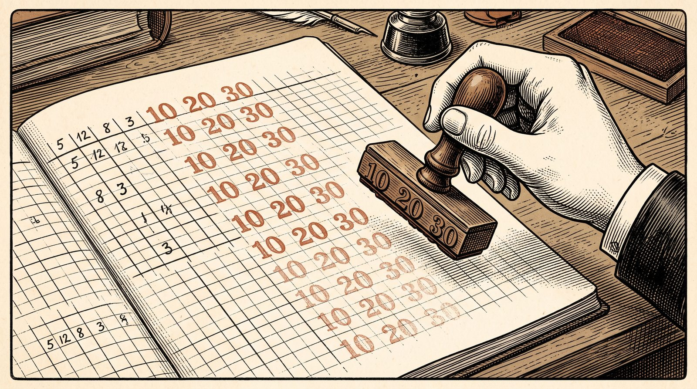

// Utilidades comunes de las simulaciones de la sección 1.1.
s11h = {
const NS = "http://www.w3.org/2000/svg";
const el = (tag, attrs = {}, padre = null) => {
const e = document.createElementNS(NS, tag);
for (const [k, v] of Object.entries(attrs)) e.setAttribute(k, v);
if (padre) padre.append(e);
return e;
};
const texto = (padre, x, y, contenido, attrs = {}) => {
const t = el("text", {x, y, "font-size": 12, fill: "var(--sim-tinta)", ...attrs}, padre);
t.textContent = contenido;
return t;
};
const deslizador = (rotulo, min, max, paso, valor, alCambiar, fmt = v => String(v)) => {
const e = html`<label class="sim-control"><span>${rotulo}</span><input type="range" min=${min} max=${max} step=${paso} value=${valor}><output></output></label>`;
const i = e.querySelector("input"), o = e.querySelector("output");
const pintar = () => { o.value = fmt(+i.value); };
i.oninput = () => { pintar(); alCambiar(); };
pintar();
return {e, get: () => +i.value, set: v => { i.value = v; pintar(); }};
};
const boton = (rotulo, f) => {
const b = html`<button type="button">${rotulo}</button>`;
b.onclick = f;
return b;
};
const fila = (rotulo, botones) => {
const d = html`<div class="sim-mem-botones"><span class="sim-mem-rot">${rotulo}</span></div>`;
d.append(...botones);
return d;
};
const punto = (svg, ev) => {
const p = svg.createSVGPoint();
p.x = ev.clientX; p.y = ev.clientY;
return p.matrixTransform(svg.getScreenCTM().inverse());
};
// Hace arrastrable un elemento del SVG; alMover recibe el punto en coordenadas del SVG.
const arrastrar = (svg, asa, alMover) => {
asa.style.cursor = "grab";
asa.addEventListener("pointerdown", ev => {
ev.preventDefault();
asa.setPointerCapture(ev.pointerId);
const mover = e => alMover(punto(svg, e));
const soltar = () => {
asa.removeEventListener("pointermove", mover);
asa.removeEventListener("pointerup", soltar);
asa.removeEventListener("pointercancel", soltar);
};
asa.addEventListener("pointermove", mover);
asa.addEventListener("pointerup", soltar);
asa.addEventListener("pointercancel", soltar);
});
};
// Puntas de flecha en los tres colores del tema, con identificadores propios de cada lienzo.
const puntas = (svg, prefijo) => {
const defs = el("defs", {}, svg);
for (const [n, c] of [["tinta", "var(--sim-tinta)"], ["acento", "var(--sim-acento)"], ["suave", "var(--sim-suave)"]]) {
const m = el("marker", {id: `${prefijo}-${n}`, viewBox: "0 0 10 10", refX: 9, refY: 5,
markerWidth: 7, markerHeight: 7, orient: "auto-start-reverse"}, defs);
el("path", {d: "M0,0 L10,5 L0,10 z", fill: c}, m);
}
};
// Cuadrícula de un plano con origen en (cx, cy), esc píxeles por unidad y rango unidades por lado.
const plano = (svg, esc, cx, cy, rango) => {
const g = el("g", {}, svg);
for (let k = -rango; k <= rango; k++) {
const w = k === 0 ? 1.3 : 0.6, c = k === 0 ? "var(--sim-suave)" : "var(--sim-regla)";
el("line", {x1: cx + k * esc, y1: cy - rango * esc, x2: cx + k * esc, y2: cy + rango * esc, stroke: c, "stroke-width": w}, g);
el("line", {x1: cx - rango * esc, y1: cy + k * esc, x2: cx + rango * esc, y2: cy + k * esc, stroke: c, "stroke-width": w}, g);
}
return g;
};
const f2 = v => (Math.abs(v) < 0.005 ? 0 : v).toFixed(2);
// Generador pseudoaleatorio con semilla (mulberry32) y normal estándar por Box–Muller.
const azar = semilla => {
let a = semilla >>> 0;
const u = () => {
a = (a + 0x6D2B79F5) >>> 0;
let t = a;
t = Math.imul(t ^ (t >>> 15), t | 1);
t ^= t + Math.imul(t ^ (t >>> 7), t | 61);
return ((t ^ (t >>> 14)) >>> 0) / 4294967296;
};
const normal = () => Math.sqrt(-2 * Math.log(1 - u())) * Math.cos(2 * Math.PI * u());
return {u, normal};
};
return {el, texto, deslizador, boton, fila, punto, arrastrar, puntas, plano, f2, azar};
}1.4 Tensores, broadcasting y einsum
Publicada el 14 de octubre de 2026
Los programas de inteligencia artificial no manejan vectores y matrices sueltos, sino tablas con cualquier número de índices: lotes de imágenes, lotes de textos, puntuaciones de cada palabra con todas las demás. Esta sección las presenta tal como viven en la memoria del ordenador y enseña las tres herramientas con las que el código del libro las manipula: la convención de lotes, el broadcasting y la notación einsum. Al terminar, el lector sabrá predecir la forma de cualquier tabla que aparezca en un programa, evitar los errores silenciosos más frecuentes y traducir una fórmula con índices a una sola línea de código.
1.4.1 Tensores: forma, ejes y memoria
En 1957, un equipo de IBM dirigido por John Backus terminó Fortran, uno de los primeros lenguajes de programación que traducían fórmulas a instrucciones de la máquina y el primero que se usó ampliamente. Una de sus decisiones, tomada casi sin pensar, sigue dando trabajo hoy: Fortran guardaba las tablas por columnas, primero toda la columna 1, después toda la 2. Quince años después, el lenguaje C, de Dennis Ritchie, las guardó por filas. Las dos convenciones conviven desde entonces, y quien pasa datos de un programa a otro sin saberlo obtiene la transpuesta de lo que quería. PyTorch y NumPy siguen a C. Esta sub-sección explica qué significa guardar una tabla «por filas», y por qué esa decisión, que parece un detalle de fontanería, permite transponer una matriz de mil millones de números sin mover ninguno.
Un lote de imágenes en color necesita cuatro índices: qué imagen, qué canal de color, qué fila y qué columna. Las palabras «vector» y «matriz» ya no bastan, y hace falta el concepto general. Esta sub-sección lo define, fija el vocabulario con el que se lee todo el código del libro (orden, forma, eje) y explica cómo se guarda un tensor en la memoria, que es lo que permite transponerlo o cambiarle la forma sin mover un solo número.
En esta sub-sección, como en el código, los índices empiezan en 0, y [n] denota el conjunto \{0, 1, \dots, n - 1\}.
Definición 1 (Tensor) Un tensor de orden k y forma (n_1, \dots, n_k) es una función \mathcal{T} : [n_1] \times \dots \times [n_k] \to \mathbb{R}, \qquad (i_1, \dots, i_k) \mapsto \mathcal{T}[i_1, \dots, i_k] . Cada posición j de la forma es un eje, de tamaño n_j, y el tensor tiene n_1 n_2 \cdots n_k elementos. Un escalar es un tensor de orden 0; un vector de \mathbb{R}^d, uno de orden 1 y forma (d); una matriz de m \times n, uno de orden 2 y forma (m, n).
Qué dice. Un tensor es una tabla con k índices, y su forma es la lista de cuántos valores puede tomar cada índice. La notación [n] (los números de 0 a n - 1) dice que cada índice empieza en 0, como en el código. A cada lista de índices, (i_1, \dots, i_k), que se llama un multiíndice, le corresponde un número real: la casilla.
Ejemplo. La matriz T = \begin{pmatrix} 10 & 20 & 30 \\ 40 & 50 & 60 \end{pmatrix} es un tensor de orden 2 y forma (2, 3), con 2 \cdot 3 = 6 elementos: T[0, 0] = 10, T[0, 2] = 30, T[1, 1] = 50. Esta matriz es el ejemplo conductor de la sub-sección.
El lector con formación matemática conoce otro significado de «tensor», como elemento de un producto tensorial de espacios vectoriales; la caja siguiente explica la relación. En la inteligencia artificial, «tensor» significa lo que dice la definición: una tabla con cualquier número de índices.
NotaPara profundizar: el tensor de los matemáticos
En álgebra multilineal, un tensor de tipo (n_1, \dots, n_k) es un elemento del producto tensorial V = \mathbb{R}^{n_1} \otimes \dots \otimes \mathbb{R}^{n_k}. Fijadas las bases canónicas, los productos e_{i_1} \otimes \dots \otimes e_{i_k} forman una base de V, y cada elemento de V se escribe de forma única como \sum \mathcal{T}[i_1, \dots, i_k]\; e_{i_1} \otimes \dots \otimes e_{i_k}. La aplicación que manda un elemento de V a su tabla de coeficientes \mathcal{T} es un isomorfismo entre V y el espacio de tablas de forma (n_1, \dots, n_k). Lo que en IA se llama tensor es, por tanto, la tabla de coordenadas en una base fija. Lo que se pierde es la ley de cambio de base: en física, un tensor es un objeto cuyas coordenadas se transforman de una manera precisa al cambiar de sistema de referencia, mientras que en el código de una red neuronal la base nunca cambia y la tabla es todo lo que hay. La conexión, sin embargo, no es solo de nombre: el producto exterior de 1.3 Proyecciones y matrices es a \otimes b en coordenadas, y la notación einsum de 1.4.3 La notación einsum es el cálculo de contracciones de tensores de toda la vida.
Las formas que aparecen en el libro. El código de IA se lee, sobre todo, leyendo formas. Las letras de la tabla siguiente se usan con este significado en todo el libro: B es el número de ejemplos que se procesan juntos (el tamaño del lote, que se estudia en 1.4.2 Lotes y broadcasting), T el número de posiciones de un texto, d la anchura de los vectores y V el tamaño del vocabulario.
| Objeto | Forma | Elementos (ejemplo) |
|---|---|---|
| Tabla de embeddings de un vocabulario | (V, d) | 50\,257 \times 768 \approx 3.9 \times 10^7 |
| Una imagen en color | (3, H, W) | 3 \times 224 \times 224 = 150\,528 |
| Un lote de imágenes | (B, 3, H, W) | 32 \times 150\,528 \approx 4.8 \times 10^6 |
| Un texto, palabra a palabra | (T, d) | 1024 \times 768 \approx 7.9 \times 10^5 |
| Un lote de textos | (B, T, d) | 8 \times 1024 \times 768 \approx 6.3 \times 10^6 |
| Puntuaciones de cada palabra con todas las demás | (B, T, T) | 8 \times 1024^2 \approx 8.4 \times 10^6 |
La última fila es la matriz de Gram de 1.3 Proyecciones y matrices calculada para cada texto del lote: un tensor de orden 3 que contiene B matrices de T \times T.
Reducir un eje. Muchas operaciones resumen un tensor a lo largo de uno de sus ejes: sumar, promediar o tomar el máximo.
Definición 2 (Reducción a lo largo de un eje) Sea \mathcal{T} de forma (n_1, \dots, n_k) y \rho una operación que resume una lista de números (la suma, la media, el máximo). La reducción de \mathcal{T} a lo largo del eje j es el tensor de forma (n_1, \dots, n_{j-1}, n_{j+1}, \dots, n_k) que se obtiene aplicando \rho a cada fila del eje j: \mathcal{R}[i_1, \dots, i_{j-1}, i_{j+1}, \dots, i_k] = \rho\bigl(\mathcal{T}[i_1, \dots, i_{j-1}, 0, i_{j+1}, \dots], \ \dots, \ \mathcal{T}[i_1, \dots, i_{j-1}, n_j - 1, i_{j+1}, \dots]\bigr) .
Qué dice. Se recorre el eje j manteniendo fijos todos los demás índices, se resume la lista resultante en un número, y el eje j desaparece de la forma.
Ejemplo. Con T y la suma: a lo largo del eje 0 (las filas), T se reduce a (10 + 40,\ 20 + 50,\ 30 + 60) = (50, 70, 90), de forma (3); a lo largo del eje 1 (las columnas), a (10 + 20 + 30,\ 40 + 50 + 60) = (60, 150), de forma (2). En PyTorch, T.sum(dim=0) y T.sum(dim=1).
La pregunta que hay que hacerse ante cada reducción es qué eje desaparece. En un lote de textos de forma (B, T, d), la media a lo largo del eje de las posiciones (el eje 1) da un tensor de forma (B, d): el centroide de 1.1 Vectores y producto punto de cada texto, todos a la vez. La suma a lo largo del último eje, en cambio, da (B, T), un número por palabra, que no tiene interés aquí pero es fácil de pedir por error. En PyTorch, el eje se elige con el argumento dim, y la opción keepdim=True conserva el eje reducido con tamaño 1, de modo que la media del ejemplo tiene forma (B, 1, d). Esa opción parece un capricho y es esencial, como se verá en 1.4.2 Lotes y broadcasting.
Reordenar sin cambiar los números. Dos operaciones cambian la manera de leer un tensor sin cambiar sus elementos. Permutar los ejes generaliza la transposición: de un tensor de forma (B, T, d) se obtiene uno de forma (B, d, T), cuyo elemento [b, i, t] es el elemento [b, t, i] del original. Cambiar la forma reparte los mismos elementos en otra forma con el mismo número total, por ejemplo la matriz T de 2 \times 3 en una de 3 \times 2 o en un vector de 6, y para eso hay que decidir en qué orden se recorren.
La memoria de un ordenador es, a efectos prácticos, una única fila larguísima de cajones numerados: 0, 1, 2, 3, \dots Un tensor tiene varios índices, así que para guardarlo hay que aplanarlo: decidir en qué cajón va cada casilla. El convenio de PyTorch, el de C, es el orden por filas: se avanza primero el último índice, como en un cuentakilómetros, cuya rueda de la derecha gira más deprisa y, al dar la vuelta, hace avanzar a la de su izquierda. Para la matriz T:
| Cajón de memoria | 0 | 1 | 2 | 3 | 4 | 5 |
|---|---|---|---|---|---|---|
| Valor guardado | 10 | 20 | 30 | 40 | 50 | 60 |
| Multiíndice (i_1, i_2) | (0, 0) | (0, 1) | (0, 2) | (1, 0) | (1, 1) | (1, 2) |
¿Hay una fórmula que dé el cajón de cada casilla sin hacer la tabla? Sí, y su ingrediente son los pasos: cuántos cajones hay que saltar para avanzar una posición en cada eje. En T, avanzar una columna es pasar al cajón siguiente (paso 1), y bajar una fila es saltar una fila entera, 3 cajones (paso 3). La definición siguiente generaliza esa cuenta a cualquier número de ejes.
Definición 3 (Índice lineal y cambio de forma) Para la forma n = (n_1, \dots, n_k), los pasos son s_j = \prod_{l > j} n_l (con s_k = 1), y el índice lineal del multiíndice i = (i_1, \dots, i_k) es \ell_n(i) = \sum_{j=1}^{k} i_j\, s_j \in \{0, \dots, N - 1\}, \qquad N = \prod_j n_j . Si m es otra forma con \prod_j m_j = N, el cambio de forma de \mathcal{T} a la forma m es el tensor \mathcal{R}[i'] = \mathcal{T}[\ell_n^{-1}(\ell_m(i'))].
Qué dice. Cláusula por cláusula:
- Los pasos. El paso del eje j es el producto de los tamaños de todos los ejes que tiene a su derecha: para avanzar una posición en el eje j hay que saltar un bloque completo formado por esos ejes. El último eje no tiene nada a su derecha, y su paso es 1: avanzar en él es pasar al cajón contiguo.
- El índice lineal. El cajón de una casilla se obtiene multiplicando cada índice por el paso de su eje y sumando. Va de 0 a N - 1, uno por elemento.
- El cambio de forma. La memoria no se toca. Para leer la casilla i' del tensor con la forma nueva m, se calcula su cajón con los pasos de m, se averigua a qué multiíndice de la forma original n correspondía ese cajón (eso es \ell_n^{-1}), y se lee esa casilla. Cambiar de forma es cambiar las gafas con las que se lee la misma fila de cajones.
Ejemplo. Para T, de forma n = (2, 3), los pasos son s_2 = 1 y s_1 = n_2 = 3, y el índice lineal es \ell_{(2,3)}(i_1, i_2) = 3 i_1 + i_2. La casilla T[1, 2], con el 60, está en el cajón 3 \cdot 1 + 2 = 5, como dice la Tabla 2. Cambiemos ahora la forma a m = (3, 2), y llamemos R al resultado. Sus pasos son s'_1 = 2 y s'_2 = 1. ¿Qué hay en R[2, 0]? Su cajón es \ell_{(3,2)}(2, 0) = 2 \cdot 2 + 0 = 4; en la forma original, el cajón 4 corresponde al multiíndice (1, 1), porque 3 \cdot 1 + 1 = 4; así que R[2, 0] = T[1, 1] = 50. Toda la matriz R sale igual: R = \begin{pmatrix} 10 & 20 \\ 30 & 40 \\ 50 & 60 \end{pmatrix} : los mismos seis números, en el mismo orden de cajones, leídos de dos en dos.
La definición usa \ell_n^{-1}, la inversa del índice lineal, como si fuera evidente que cada cajón viene de una sola casilla. Hay que demostrarlo.
Proposición 1 (El índice lineal es una numeración) \ell_n es una biyección de [n_1] \times \dots \times [n_k] en \{0, \dots, N - 1\} que conserva el orden lexicográfico. En consecuencia, cambiar la forma no pierde ni repite ningún elemento, y cambiar la forma de n a m y después de m a p es lo mismo que cambiarla directamente de n a p.
Qué dice. Tres garantías. Primera, sin choques ni huecos: dos casillas distintas nunca van al mismo cajón, y todos los cajones de 0 a N - 1 reciben una casilla. Segunda, el orden del diccionario: el orden lexicográfico compara dos multiíndices como se ordenan las palabras en un diccionario, por el primer índice en que difieren; la proposición dice que ese orden es exactamente el de los cajones, el del cuentakilómetros. Tercera, los pasos intermedios no importan: pasar de una forma a otra pasando por una tercera da lo mismo que ir directamente, porque la memoria nunca se movió.
Ejemplo. Con la forma (2, 2, 2), de pasos (4, 2, 1), los ocho multiíndices en orden de diccionario reciben los cajones 0 a 7, sin saltos ni repeticiones:
| Multiíndice | (0,0,0) | (0,0,1) | (0,1,0) | (0,1,1) | (1,0,0) | (1,0,1) | (1,1,0) | (1,1,1) |
|---|---|---|---|---|---|---|---|---|
| 4i_1 + 2i_2 + i_3 | 0 | 1 | 2 | 3 | 4 | 5 | 6 | 7 |
Con todos los tamaños iguales a 2, el índice lineal es exactamente la escritura de un número en binario, y la proposición dice algo que el lector ya sabe de la escuela: cada número tiene una única escritura en una base.
Demostración. La estrategia: el índice lineal es la escritura de un número en una base mixta, como un reloj digital, que cuenta los segundos y los minutos en base 60 y las horas en base 24. Las «cifras» son los índices i_j \in [n_j] y el «valor posicional» de cada cifra es su paso s_j. En base 10, aunque las decenas y las unidades estén al máximo, 99, nunca se llega a una centena; la demostración comprueba que lo mismo pasa en cualquier base mixta.
Paso 1: la cola nunca alcanza el paso. Por la definición de los pasos, s_j = n_{j+1} s_{j+1}, de modo que (n_l - 1)\, s_l = s_{l-1} - s_l. Si se ponen al máximo, n_l - 1, todos los índices a la derecha de la posición j, la suma se cancela en cadena (es una suma telescópica): \sum_{l > j} (n_l - 1)\, s_l = (s_j - s_{j+1}) + (s_{j+1} - s_{j+2}) + \dots + (s_{k-1} - s_k) = s_j - s_k = s_j - 1 . Así que, para cualquier multiíndice, \sum_{l > j} i_l s_l \le s_j - 1 < s_j: la «cola» de la derecha nunca llega a valer un paso del eje j.
Paso 2: el orden se conserva, y no hay choques. Sean i e i' dos multiíndices que coinciden hasta la posición j - 1 y en la posición j cumplen i_j < i'_j, es decir, i va antes que i' en el diccionario. En la posición j, i' lleva una ventaja de al menos s_j. Lo más que i puede recuperar con su cola es s_j - 1 (paso 1), y lo menos que i' aporta con la suya es 0. Por tanto \ell_n(i) < \ell_n(i'): el índice lineal crece estrictamente con el orden del diccionario. En particular, dos multiíndices distintos nunca dan el mismo cajón (\ell_n es inyectiva).
Paso 3: no hay huecos. El menor valor es \ell_n(0, \dots, 0) = 0. El mayor se obtiene con todos los índices al máximo, y por la misma suma telescópica, ahora desde j = 1 y con n_1 s_1 = N, vale \sum_j (n_j - 1)\, s_j = N - 1. Hay N multiíndices, que van a parar sin choques a los N números de \{0, \dots, N - 1\}: por el principio del palomar, los ocupan todos, y \ell_n es una biyección.
Paso 4: los pasos intermedios se cancelan. Si \mathcal{R}[i'] = \mathcal{T}[\ell_n^{-1}(\ell_m(i'))] y \mathcal{S}[i''] = \mathcal{R}[\ell_m^{-1}(\ell_p(i''))], sustituyendo la primera en la segunda, \mathcal{S}[i''] = \mathcal{T}\bigl[\ell_n^{-1}\bigl(\ell_m(\ell_m^{-1}(\ell_p(i'')))\bigr)\bigr] = \mathcal{T}[\ell_n^{-1}(\ell_p(i''))] , porque una biyección seguida de su inversa no hace nada: la forma intermedia m desaparece, y queda el cambio directo de n a p.
Se ha demostrado que guardar un tensor por filas es una numeración perfecta de sus casillas, y que cambiar de forma es solo cambiar la manera de leerla.
Comprobación con números. Con la forma (2, 3, 4), de pasos (12, 4, 1) y N = 24: el multiíndice (0, 2, 3), con la cola al máximo, está en el cajón 2 \cdot 4 + 3 = 11 = 12 - 1, y el siguiente en el diccionario, (1, 0, 0), en el cajón 12. La cola llegó a 11 y no alcanzó el salto de 12, como dice el paso 1. La última casilla, (1, 2, 3), está en el cajón 12 + 8 + 3 = 23 = N - 1, como dice el paso 3.
Un tensor en la memoria. Un tensor se guarda en la fila de cajones como N números consecutivos, en el orden del índice lineal, junto con una pequeña ficha que dice cómo leerlos: la forma y los pasos. Para encontrar el elemento [i_1, \dots, i_k], PyTorch calcula \sum_j i_j s_j y salta a esa casilla. La Proposición 1 garantiza que la lectura es correcta.
La idea importante es que los pasos de la ficha no tienen por qué ser los del orden por filas. Para transponer una matriz de forma (2, 3), guardada con pasos (3, 1), basta escribir una ficha nueva con forma (3, 2) y pasos (1, 3): la misma fila de números, leída de otra manera (Figura 1). Transponer o permutar ejes no mueve ningún número y cuesta lo mismo con un tensor de seis elementos que con uno de mil millones. Un tensor cuyos pasos son exactamente los del orden por filas se llama contiguo; la transpuesta del ejemplo no lo es.
El programa siguiente lo comprueba en PyTorch, que expone los pasos con el método stride() y la dirección de la primera casilla con data_ptr(). La función torch.arange(6.0) crea el vector (0, 1, \dots, 5) y reshape(2, 3) le cambia la forma. Guárdelo como formas.py y ejecútelo con python formas.py:
# archivo: formas.py
import torch
x = torch.arange(6.0).reshape(2, 3) # los números 0, 1, ..., 5 en una matriz 2 × 3
print(x)
print("x: forma", tuple(x.shape), " pasos", x.stride())
t = x.T # la transpuesta
print("x.T: forma", tuple(t.shape), " pasos", t.stride())
print("¿comparten memoria?", t.data_ptr() == x.data_ptr())
print("¿contiguas?", x.is_contiguous(), t.is_contiguous())
lote = torch.zeros(8, 16, 768) # 8 frases, 16 posiciones, 768 números por palabra
print("lote:", tuple(lote.shape), " orden", lote.ndim, " elementos", lote.numel())
print("media sobre las posiciones:", tuple(lote.mean(dim=1).shape))
print("suma sobre el último eje: ", tuple(lote.sum(dim=-1).shape))
print("media con keepdim=True: ", tuple(lote.mean(dim=1, keepdim=True).shape))Lo que debe ver. Exactamente esto, en cualquier máquina:
tensor([[0., 1., 2.],
[3., 4., 5.]])
x: forma (2, 3) pasos (3, 1)
x.T: forma (3, 2) pasos (1, 3)
¿comparten memoria? True
¿contiguas? True False
lote: (8, 16, 768) orden 3 elementos 98304
media sobre las posiciones: (8, 768)
suma sobre el último eje: (8, 16)
media con keepdim=True: (8, 1, 768)Las cuatro primeras líneas reproducen la Figura 1: la transpuesta tiene los pasos intercambiados y comienza en la misma dirección de memoria que el original, de modo que no se ha copiado nada. Las cuatro últimas son las formas de las reducciones comentadas antes; dim=-1 designa el último eje, como los índices negativos de las listas de Python. Si su terminal no muestra bien los signos de interrogación de apertura o las tildes, el programa es correcto: es la configuración de caracteres de la terminal, que no afecta a nada.
NotaPara profundizar: tensores contiguos,
view y reshape
PyTorch tiene dos métodos para cambiar la forma. view nunca copia: escribe una ficha nueva sobre la misma memoria, y por eso solo funciona cuando los pasos del tensor lo permiten; aplicado a una transpuesta, como x.T.view(6), da un error que recomienda usar reshape. reshape devuelve una vista cuando puede y, si no, copia los datos en orden por filas y cambia la forma de la copia. El método contiguous() hace solo la copia: devuelve el mismo tensor si ya es contiguo y, si no, una copia ordenada por filas. La diferencia importa por dos razones. La primera es la memoria: una vista no ocupa espacio nuevo, pero una copia sí, y con tensores de varios GiB eso cuenta en el presupuesto de 7 GB del laboratorio. La segunda es que una vista comparte los datos con el original, de modo que modificar uno modifica el otro. Además, muchas operaciones de la GPU son más rápidas sobre tensores contiguos, porque leen casillas consecutivas de la memoria; por qué la contigüidad acelera la lectura se explica en 4.1 Arquitectura de GPU y modelo rooflinedentro de 3 capítulos.
La decisión de Backus y la de Ritchie, columnas o filas, son dos fichas distintas para la misma fila de cajones: guardar por columnas es usar los pasos (1, n_1) en lugar de (n_2, 1). Por eso PyTorch puede transponer sin copiar: la transpuesta de una tabla guardada por filas es esa misma tabla leída «a lo Fortran». Lo que en 1957 y 1972 fueron dos convenciones incompatibles es hoy un simple cambio de ficha.
Lo que el lector ya sabe: leer la forma de un tensor y el significado de cada eje; reducir a lo largo de un eje sabiendo cuál desaparece; calcular el cajón de memoria de cualquier casilla con los pasos; y que un tensor es una fila de números en la memoria más una ficha de forma y pasos, de modo que cambiar de forma, transponer o permutar ejes no mueve ningún dato.
1.4.2 Lotes y broadcasting
En 1955, la Universidad de Harvard abrió un máster nuevo de «procesamiento automático de datos»: cómo llevar con máquinas las cuentas de una empresa, sus nóminas, sus inventarios, sus tablas. Entre sus primeros profesores estaba un joven matemático canadiense, Kenneth Iverson, y muy pronto se encontró con un problema que no esperaba. Según contó después, la notación matemática con la que se había formado no servía para los cursos que le habían asignado (ACM SIGAPL, s. f.). Para decir en la pizarra algo tan simple como «súmale a cada fila de esta tabla el mismo vector» había que escribir índices, sumatorios y bucles, y la idea quedaba enterrada bajo la maquinaria. Iverson se propuso inventar una notación en la que una sola operación actuara sobre una tabla entera.
Setenta años después, su problema es el de esta sub-sección: ¿cómo se suma un mismo vector a un millón de filas sin escribir un bucle y sin copiar el vector un millón de veces? La pregunta parece de contabilidad, y lo era, pero su respuesta es hoy una de las reglas que más se usan, y que más errores causan, en todo el código de inteligencia artificial.
Primero, por qué hace falta. Un programa de IA casi nunca procesa un ejemplo a la vez. En 0.3 Medir sin engañarse se midió que cada encargo a la GPU tiene un costo fijo de lanzamiento, y nadie va al mercado una vez por cada fruta: se llena la cesta. Agrupar ejemplos obliga a combinar tensores de formas distintas: un lote de datos con un vector de parámetros, o con una columna de normas. Esta sub-sección explica cómo se apilan los ejemplos y la regla, llamada broadcasting, que decide qué combinaciones de formas tienen sentido. Al final, el lector sabrá predecir, antes de ejecutar una línea, qué forma tendrá su resultado, y reconocerá las dos trampas en las que el programa hace algo distinto de lo que se pretendía sin dar ningún aviso.
El lote. Un lote (batch) es un tensor cuyo primer eje recorre ejemplos independientes, como una hoja de cálculo en la que cada fila es un cliente y cada columna un dato suyo. Un lote de B vectores de \mathbb{R}^d es una matriz X de forma (B, d) cuya fila b es el ejemplo x_b. Esta convención, un ejemplo por fila, choca con la de las fórmulas matemáticas, donde los vectores son columnas, y conviene saber traducir de una a otra.
Toda esta sub-sección usa el mismo lote de ejemplo, con B = 3 ejemplos de dos coordenadas: X = \begin{pmatrix} 3 & 4 \\ 0 & 2 \\ 0 & 6 \end{pmatrix} , \qquad x_0 = (3, 4), \quad x_1 = (0, 2), \quad x_2 = (0, 6) .
La capa lineal y = Wx + b de 1.3 Proyecciones y matrices transforma un vector columna x. Aplicada a todo el lote, se escribe en el código así: Y = X W^\top + b , con X de forma (B, d_{\text{ent}}), W de forma (d_{\text{sal}}, d_{\text{ent}}) e Y de forma (B, d_{\text{sal}}). La transpuesta aparece porque PyTorch guarda los pesos de una capa con una fila por cada salida, como en la fórmula Wx, mientras que los ejemplos del lote van en filas. La proposición siguiente asegura que esta escritura hace lo que se pretende.
Proposición 2 (Una capa aplicada a un lote) Para todo lote X de forma (B, d_{\text{ent}}), la fila b de X W^\top es (W x_b)^\top. Es decir: multiplicar el lote por W^\top aplica la capa a cada ejemplo por separado y apila los resultados, uno por fila.
Qué dice. No hace falta un bucle que recorra los ejemplos: un único producto de matrices calcula Wx_0, Wx_1, \dots de una vez, y los deja ordenados en las filas del resultado, en el mismo orden que los ejemplos.
Ejemplo. Con la capa W = \begin{pmatrix} 1 & 0 \\ 1 & 1 \end{pmatrix} , \qquad W x = \begin{pmatrix} x^{(0)} \\ x^{(0)} + x^{(1)} \end{pmatrix} , que copia la primera coordenada y suma las dos, ejemplo a ejemplo se obtiene W x_0 = (3, 7), W x_1 = (0, 2) y W x_2 = (0, 6). Y de una vez: X W^\top = \begin{pmatrix} 3 & 4 \\ 0 & 2 \\ 0 & 6 \end{pmatrix} \begin{pmatrix} 1 & 1 \\ 0 & 1 \end{pmatrix} = \begin{pmatrix} 3 \cdot 1 + 4 \cdot 0 & 3 \cdot 1 + 4 \cdot 1 \\ 0 & 2 \\ 0 & 6 \end{pmatrix} = \begin{pmatrix} 3 & 7 \\ 0 & 2 \\ 0 & 6 \end{pmatrix} . Las tres filas son, en orden, los tres resultados.
Demostración. Basta comparar una casilla cualquiera, la de la fila b y la columna i, de los dos lados.
Paso 1: la casilla de la izquierda. Por la definición del producto de matrices, (X W^\top)_{bi} = \sum_j X_{bj}\, (W^\top)_{ji}.
Paso 2: deshacer la transpuesta. La transpuesta intercambia los índices, (W^\top)_{ji} = W_{ij}; y la casilla X_{bj} es la coordenada j del ejemplo b, que se escribe (x_b)_j. La suma queda \sum_j W_{ij}\, (x_b)_j.
Paso 3: reconocer el resultado. Esa suma es exactamente la coordenada i del producto de matriz por vector W x_b: la fila i de W multiplicada por x_b.
Como las dos casillas coinciden para todo b y todo i, la fila b de XW^\top es W x_b escrito en horizontal. Es la lectura por filas del producto de la proposición «Las cuatro lecturas del producto» (1.3 Proyecciones y matrices).
El número de operaciones es el mismo que aplicando la capa ejemplo a ejemplo, 2 B d_{\text{ent}} d_{\text{sal}}. Lo que cambia es que se hace con un solo encargo grande en lugar de B pequeños, y eso, en una GPU, es mucho más rápido.
Queda sumar el sesgo. Con b = (10, 20), lo que se quiere es sumar b a cada fila de XW^\top:
\begin{pmatrix} 3 & 7 \\ 0 & 2 \\ 0 & 6 \end{pmatrix} + \begin{pmatrix} 10 & 20 \end{pmatrix} \ \overset{?}{=} \ \begin{pmatrix} 13 & 27 \\ 10 & 22 \\ 10 & 26 \end{pmatrix} .
Pero, en sentido estricto, una tabla de 3 \times 2 y un vector de 2 números no se pueden sumar: el álgebra lineal solo suma objetos del mismo tamaño. Escribir el bucle «para cada fila, súmale b» cada vez sería engorroso y lento. La regla del broadcasting permite escribir simplemente X @ W.T + b, y decide que esa suma significa lo que se quería.
Cómo se escribe una forma. Antes de la regla, una convención que se usará constantemente. La forma de un tensor es la lista de los tamaños de sus ejes (Definición 1), y se escribe entre paréntesis:
| Forma | Qué es | Ejemplo |
|---|---|---|
| (3, 2) | una tabla de 3 filas y 2 columnas | el lote X |
| (2) | un vector de 2 números | el sesgo b = (10, 20) |
| (1) | un vector con un solo número | (7) |
| (3, 1) | una columna: 3 filas de 1 número | las normas de las filas de X |
| (1, 3) | una fila: 1 fila de 3 números |
En Python, la forma de un vector de 2 números se escribe (2,), con una coma, porque (2) sería simplemente el número 2 entre paréntesis. En el texto se escribe (2), sin la coma.
La regla. El broadcasting (literalmente, «difusión») extiende las operaciones elemento a elemento, como la suma o el producto coordenada a coordenada, a tensores de formas distintas pero compatibles. La idea cabe en una imagen escolar: para sumar a mano 347 + 52, se escriben los números uno debajo del otro alineados por la derecha, unidades bajo unidades, y se trabaja columna por columna. Con las formas se hace lo mismo. En cada columna caben tres casos: los dos tamaños son iguales (se opera casilla con casilla), uno de los dos vale 1 (ese se repite a lo largo de la columna, como un sello que se estampa una y otra vez), o son distintos y ninguno vale 1 (error). Si a una forma le faltan columnas por la izquierda, como le faltan cifras al 52, se rellenan con unos.
Definición 4 (Formas compatibles y broadcasting) Sean dos formas n = (n_1, \dots, n_k) y m = (m_1, \dots, m_{k'}), y sea K = \max(k, k'). Se alinean por la derecha: a la forma más corta se le añaden por la izquierda ejes de tamaño 1 hasta tener K ejes. Las formas son compatibles si, en cada eje j, los tamaños alineados son iguales o uno de ellos vale 1. La forma resultante r tiene en cada eje el mayor de los dos tamaños.
La expansión de un tensor \mathcal{T} a la forma resultante r es el tensor \mathcal{E} de forma r que repite \mathcal{T} a lo largo de los ejes de tamaño 1: \mathcal{E}[i_1, \dots, i_K] = \mathcal{T}[i'_1, \dots, i'_K], con i'_j = i_j si el eje j de \mathcal{T} tiene tamaño r_j e i'_j = 0 si tiene tamaño 1 (los ejes añadidos se descartan al indexar \mathcal{T}). Una operación elemento a elemento entre dos tensores compatibles se define como la operación entre sus expansiones.
Qué dice. El primer párrafo es la suma escolar: alinear por la derecha, mirar columna por columna y quedarse en cada una con el tamaño mayor. El segundo dice qué significa «repetir». En un eje donde \mathcal{T} tiene tamaño 1, solo existe la posición 0, así que cualquier posición i_j que se pida en la expansión se responde leyendo la posición 0: por eso i'_j = 0. En los demás ejes se lee la posición pedida, sin cambios.
Ejemplo 1: el sesgo. Sumar XW^\top, de forma (3, 2), y b, de forma (2):
| primer eje | segundo eje | |
|---|---|---|
| XW^\top | 3 | 2 |
| b | 1 | 2 |
| resultado | 3 | 2 |
A b le falta un eje por la izquierda, que se rellena con un 1 (en cursiva). En el primer eje, 3 frente a 1: b se repite tres veces. En el segundo, 2 frente a 2: iguales. La expansión de b es la tabla \mathcal{E} = \begin{pmatrix} 10 & 20 \\ 10 & 20 \\ 10 & 20 \end{pmatrix} , \qquad \text{por ejemplo,} \quad \mathcal{E}[2, 1] = b[1] = 20 , y la suma da la tabla \begin{pmatrix} 13 & 27 \\ 10 & 22 \\ 10 & 26 \end{pmatrix} que se quería.
Ejemplo 2: una suma imposible. X, de forma (3, 2), y un vector de forma (3). Alineados por la derecha quedan (3, 2) y (1, 3); en el último eje, 2 \neq 3 y ninguno vale 1. La operación da un error. Es lo que pasa si se intenta sumar a cada fila de X un vector con tantos números como filas tiene X, en lugar de tantos como columnas.
Ejemplo 3: los dos se estiran. Una columna de forma (3, 1) y una fila de forma (1, 2) son compatibles, con resultado (3, 2): la columna se repite a lo largo de las columnas, y la fila a lo largo de las filas. Así se construye de un golpe la tabla de multiplicar del colegio: la columna (1, 2, \dots, 9), de forma (9, 1), por la fila (1, 2, \dots, 9), de forma (1, 9), da la tabla de 9 \times 9 cuya casilla [i, j] es el producto (i + 1)(j + 1). Este tercer caso es el más potente, y también el origen de la segunda trampa que se verá más abajo.
De la pizarra de Iverson a PyTorch. Iverson publicó su notación en 1962, en un libro de título modesto, A Programming Language (Iverson 1962), cuando ya trabajaba en IBM. La notación resultó tan precisa que se pudo convertir en algo que una máquina ejecutara: con las iniciales del libro como nombre, el lenguaje APL funcionaba en los ordenadores de IBM desde 1966, y en él sumar un número a una tabla entera era una sola operación. Quedaba el caso general de los tres ejemplos anteriores: una fila sumada a cada fila, una columna a cada columna, las dos a la vez. La regla que hoy usa todo el mundo para eso, alinear por la derecha y estirar los ejes de tamaño 1, es la de NumPy, la biblioteca de cálculo numérico de Python, heredera del paquete Numeric de mediados de los años noventa; sus autores la describen como una duplicación «virtual», sin copiar ningún dato en la memoria (Harris et al. 2020). PyTorch la heredó tal cual. Cuando el lector escribe X @ W.T + b, está usando la respuesta, perfeccionada durante cuarenta años, a la queja de un profesor de Harvard. Lo de «sin copiar ningún dato» merece una explicación, porque es la mitad de la magia.
El broadcasting no copia. La expansión es una definición matemática: en la máquina no se construye. La razón está en los pasos de 1.4.1 Tensores: forma, ejes y memoria, la ficha que dice cuántas casillas de memoria hay que saltar para avanzar una posición en cada eje.
Proposición 3 (El broadcasting no copia) La expansión de \mathcal{T} es el tensor que lee la misma memoria que \mathcal{T} con paso 0 en cada eje expandido (y los pasos de \mathcal{T} en los demás).
Qué dice. Un paso 0 significa que avanzar en ese eje no cambia la casilla que se lee: se salta 0 casillas. Así, todas las filas de la expansión leen las mismas casillas, y repetir un vector un millón de veces no cuesta ni un byte de memoria.
Ejemplo. El sesgo b = (10, 20) ocupa dos casillas de memoria, la 0 (con el 10) y la 1 (con el 20), y su paso es 1. Su expansión a la forma (3, 2) tiene pasos (0, 1): 0 en el eje nuevo, 1 en el de siempre. La casilla que lee cada posición [i_1, i_2] es 0 \cdot i_1 + 1 \cdot i_2:
| Posición en la expansión | [0,0] | [0,1] | [1,0] | [1,1] | [2,0] | [2,1] |
|---|---|---|---|---|---|---|
| Casilla leída, 0 \cdot i_1 + 1 \cdot i_2 | 0 | 1 | 0 | 1 | 0 | 1 |
| Valor | 10 | 20 | 10 | 20 | 10 | 20 |
Seis números a la vista, dos en la memoria.
Demostración. Paso 1: qué casilla lee la expansión. Por la definición, la posición [i_1, \dots, i_K] de la expansión vale \mathcal{T}[i'_1, \dots, i'_K]. Por la Proposición 1, ese elemento de \mathcal{T} está guardado en la casilla \sum_j i'_j\, s_j, donde s_j son los pasos de \mathcal{T} (para los ejes añadidos por la izquierda, que \mathcal{T} no tiene, se puede tomar cualquier paso, porque allí i'_j = 0).
Paso 2: los ejes expandidos. En un eje expandido, i'_j = 0 sea cual sea i_j, así que su término es 0 \cdot s_j = 0. Es lo mismo que escribir i_j \cdot 0: conservar el índice pedido i_j y usar un paso 0.
Paso 3: los demás ejes. En ellos i'_j = i_j, y el término es i_j\, s_j, con el paso de siempre.
Juntando los dos pasos, la casilla leída es \sum_j i_j\, \tilde s_j, con \tilde s_j = 0 en los ejes expandidos y \tilde s_j = s_j en los demás: es la lectura de la memoria de \mathcal{T} con esos pasos, sin ninguna copia.
La consecuencia práctica es grande. Sumar un sesgo de 768 números a un lote de un millón de filas no crea una tabla auxiliar de 10^6 \times 768 números, que en precisión simple ocuparía unos 3 GB: el sesgo sigue ocupando sus 3 KB.

Tres preguntas sobre la regla. Cuando se aprende una regla así, surgen tres preguntas naturales. ¿Importa el orden de los operandos? Si A se puede combinar con B, y B con C, ¿se puede combinar A con C? ¿Y se puede guardar el resultado encima del primer operando, sin pedir memoria nueva? La última necesita una palabra: una operación en el sitio escribe su resultado sobre el primer operando, como corregir en el mismo cuaderno en lugar de pasar a limpio; en Python se escribe x += y, o x.add_(y) en PyTorch (el guion bajo final indica «en el sitio»). La proposición siguiente responde a las tres.
Proposición 4 (Propiedades de la compatibilidad) Sean n, m y p formas.
- El orden no importa. n es compatible con m si y solo si m es compatible con n, y la forma resultante es la misma en los dos órdenes.
- No es transitiva. Que n sea compatible con m, y m con p, no implica que n sea compatible con p. Ejemplo: un vector de 3 números, de forma (3); uno de un solo número, de forma (1); y uno de 4 números, de forma (4).
- En el sitio, el primer operando no crece. Una operación en el sitio
x += y, conxde forma n eyde forma m, es posible si y solo si m no tiene más ejes que n y, alineadas por la derecha, cada eje de m tiene el mismo tamaño que el de n o tamaño 1. Equivalentemente: n y m son compatibles y la forma resultante es n.
Qué dice el punto 1. No hay que preocuparse de poner el tensor grande a la izquierda: X + b y b + X tienen la misma forma, (3, 2). Ojo: lo que no depende del orden es la forma. Los valores dependen de la operación: X + b y b + X coinciden, pero X - b y b - X no, igual que 5 - 3 \neq 3 - 5.
Qué dice el punto 2. Es la regla de «el amigo de mi amigo no es mi amigo». Con x = (1, 2, 3), y = (10) y z = (1, 2, 3, 4):
| Operación | Formas alineadas | ¿Compatibles? | Resultado |
|---|---|---|---|
| x + y | (3) y (1) | sí: uno vale 1 | (11, 12, 13) |
| y + z | (1) y (4) | sí: uno vale 1 | (11, 12, 13, 14) |
| x + z | (3) y (4) | no: 3 \neq 4 y ninguno vale 1 | error |
El tamaño 1 es un comodín, como en un juego de cartas: encaja con cualquier tamaño. Por eso es amigo de todos, y por eso la amistad no se transmite.
Qué dice el punto 3. El resultado de x += y se escribe en la memoria de x, que tiene sitio exactamente para los elementos de x. Si el broadcasting pidiera un resultado más grande, no habría dónde ponerlo. Con el lote de ejemplo: X += b funciona, porque (3, 2) y (2) dan (3, 2), la forma de X. Pero si c es una columna de forma (3, 1), c += torch.tensor([1.0, 2.0]) falla: (3, 1) y (2) darían (3, 2), seis números que no caben en las tres casillas de c. En cambio, c += 5 funciona: el 5 se expande a la forma de c.
Demostración. Punto 1. La regla se aplica eje a eje, y en cada eje las tres piezas son simétricas: alinear por la derecha rellena con unos la forma más corta, sea cual sea su posición en la operación; la condición «los dos tamaños son iguales, o uno de ellos vale 1» no cambia al intercambiar los tamaños; y el mayor de dos números tampoco. Luego la compatibilidad y la forma resultante no dependen del orden.
Punto 2. Basta un contraejemplo, y la Tabla 6 lo comprueba eje a eje: (3) y (1) son compatibles porque uno vale 1; (1) y (4), también; (3) y (4) no, porque 3 \neq 4 y ninguno vale 1.
Punto 3. Hay que probar las dos direcciones de la equivalencia. Sea k el número de ejes de n y k' el de m.
- Si se cumple la condición, la forma resultante es n. Como k' \le k, al alinear solo se añaden unos a la izquierda de m, y la forma resultante tiene k ejes. En los ejes añadidos, el tamaño de m es 1 y el resultado es \max(n_j, 1) = n_j. En los demás, el tamaño de m es n_j o 1; en ambos casos los tamaños son compatibles y el mayor es n_j. Luego el resultado tiene forma n, y cabe en la memoria de
x. - Si la forma resultante es n, se cumple la condición. La forma resultante tiene \max(k, k') ejes; si es n, tiene k, y por tanto k' \le k. En cada eje alineado, \max(n_j, m_j) = n_j, luego m_j \le n_j. Por la compatibilidad, o m_j = n_j, o alguno de los dos vale 1; si n_j = 1, entonces m_j \le 1 y m_j = 1; si n_j > 1, el que vale 1 tiene que ser m_j. En todos los casos, m_j = n_j o m_j = 1.
Si la forma resultante no es n, el resultado no cabe en la memoria de x (tiene más ejes, o un eje más largo), y la operación en el sitio es imposible; PyTorch la rechaza con un error.
Tres usos y dos trampas. El broadcasting aparece en casi cada línea del código de una red neuronal. Tres usos típicos, con el lote de ejemplo X:
- Sumar un vector a cada fila:
X + b, conbde forma (2). Es el sesgo de antes. - Centrar cada columna, restándole su media:
X - X.mean(dim=0). La media a lo largo del eje 0 (las filas) es un número por columna: \bigl(\tfrac{3 + 0 + 0}{3}, \tfrac{4 + 2 + 6}{3}\bigr) = (1, 4), de forma (2). Se alinea como (1, 2) y se resta a cada fila: \begin{pmatrix} 3 & 4 \\ 0 & 2 \\ 0 & 6 \end{pmatrix} - \begin{pmatrix} 1 & 4 \end{pmatrix} = \begin{pmatrix} 2 & 0 \\ -1 & -2 \\ -1 & 2 \end{pmatrix} , y ahora cada columna suma cero. - Normalizar cada fila, dividiéndola por su norma:
X / X.norm(dim=1, keepdim=True). Paso a paso:X.norm(dim=1)calcula la norma de cada fila recorriendo el eje de las columnas, que en el código es el eje 1 (allí los ejes se cuentan desde 0): \sqrt{3^2 + 4^2} = 5, \sqrt{0^2 + 2^2} = 2 y \sqrt{0^2 + 6^2} = 6.- Con
keepdim=True, el eje colapsado se conserva con tamaño 1, y las normas forman una columna de forma (3, 1). - La división alinea (3, 2) con (3, 1): en el segundo eje, la columna se repite a lo largo de las dos coordenadas. Cada fila se divide por su norma: \begin{pmatrix} 3 & 4 \\ 0 & 2 \\ 0 & 6 \end{pmatrix} \div \begin{pmatrix} 5 \\ 2 \\ 6 \end{pmatrix} = \begin{pmatrix} 3/5 & 4/5 \\ 0/2 & 2/2 \\ 0/6 & 6/6 \end{pmatrix} = \begin{pmatrix} 0.6 & 0.8 \\ 0 & 1 \\ 0 & 1 \end{pmatrix} .
- Comprobación: \sqrt{0.6^2 + 0.8^2} = \sqrt{0.36 + 0.64} = 1, y las otras dos filas también miden 1.
La primera trampa: olvidar keepdim. Sin keepdim=True, las normas tienen forma (3), y la regla las alinea por la derecha como (1, 3): una fila, no una columna. Con el lote de ejemplo, (3, 2) frente a (1, 3) falla en el último eje (2 \neq 3), y PyTorch da un error. Es una suerte. Lo peligroso es una tabla cuadrada, en la que el número de filas coincide con el de columnas. Con
S = \begin{pmatrix} 3 & 4 \\ 0 & 2 \end{pmatrix} , \qquad \text{normas de las filas: } 5 \text{ y } 2 ,
la fila de normas (5, 2) se repite hacia abajo y divide por columnas:
S \div \begin{pmatrix} 5 & 2 \\ 5 & 2 \end{pmatrix} = \begin{pmatrix} 3/5 & 4/\mathbf{2} \\ 0/5 & 2/\mathbf{2} \end{pmatrix} = \begin{pmatrix} 0.6 & 2 \\ 0 & 1 \end{pmatrix} .
Fíjese en el 4: pertenecía a la fila 0 y debía dividirse por su norma, 5; acabó dividido por 2, la norma de la fila 1, solo porque estaba en la columna 1. La primera fila «normalizada» mide \sqrt{0.36 + 4} \approx 2.088. La segunda mide 1 por pura casualidad, porque su primer elemento es 0. Y el programa no protesta.
| Expresión | Forma del divisor | Cómo divide | ¿Las filas miden 1? |
|---|---|---|---|
S / S.norm(dim=1, keepdim=True) |
(2, 1): columna | cada fila, por su norma | sí |
S / S.norm(dim=1) |
(2), alineada como (1, 2): fila | la columna j, por la norma de la fila j | no, y sin aviso |
La segunda trampa: (n) frente a (n, 1). Un vector de forma (3) y una columna de forma (3, 1) con los mismos números, a = (0, 1, 2), parecen el mismo objeto, y restarlos debería dar ceros. Pero se alinean como (1, 3) y (3, 1): es el Ejemplo 3, los dos se estiran, y el resultado es la tabla (3, 3) de todas las diferencias, la «tabla de restar» de a:
\begin{pmatrix} 0 & 1 & 2 \end{pmatrix} - \begin{pmatrix} 0 \\ 1 \\ 2 \end{pmatrix} = \begin{pmatrix} 0 - 0 & 1 - 0 & 2 - 0 \\ 0 - 1 & 1 - 1 & 2 - 1 \\ 0 - 2 & 1 - 2 & 2 - 2 \end{pmatrix} = \begin{pmatrix} 0 & 1 & 2 \\ -1 & 0 & 1 \\ -2 & -1 & 0 \end{pmatrix} .
Es el mismo mecanismo que construía la tabla de multiplicar: allí era lo que se quería, aquí es un accidente. De nuevo, sin ningún error. Lo único que delata el fallo es la forma del resultado, y por eso el hábito más útil del programador de IA es comprobar las formas en cada paso: una línea como assert Y.shape == (B, d) cuesta poco y ahorra horas.
Iverson recibió en 1979 el premio Turing, el más alto de la informática, y tituló su conferencia «La notación como herramienta del pensamiento» (Iverson 1980). Su tesis era que una buena notación no solo abrevia: permite pensar cosas que sin ella no se ven. Las formas son un buen ejemplo. Quien se acostumbra a leer (B, d), (B, 1) y (1, d) como columnas de una suma escolar ve venir las dos trampas antes de ejecutar nada, y lee el código de una red neuronal casi como se lee una ecuación.
Todas las distancias a la vez. El broadcasting permite calcular de un golpe las distancias entre todos los vectores de dos colecciones, P de forma (N, d) y Q de forma (M, d): la búsqueda de vecinos de 1.2 Similitud y alta dimensión la necesita constantemente. Hay dos maneras. La directa resta cada fila de P de cada fila de Q y suma los cuadrados. La otra usa el binomio al cuadrado del colegio, (a - b)^2 = a^2 + b^2 - 2ab, coordenada a coordenada: \|p_i - q_j\|^2 = \sum_k (p_{ik} - q_{jk})^2 = \underbrace{\sum_k p_{ik}^2}_{\|p_i\|^2} + \underbrace{\sum_k q_{jk}^2}_{\|q_j\|^2} - 2 \underbrace{\sum_k p_{ik}\, q_{jk}}_{p_i \cdot q_j} . Los tres términos son tensores fáciles de obtener, y el broadcasting los combina:
| Término | Código | Forma |
|---|---|---|
| \|p_i\|^2 | (P**2).sum(dim=1, keepdim=True) |
(N, 1): columna |
| \|q_j\|^2 | (Q**2).sum(dim=1) |
(M), alineada como (1, M): fila |
| -2\, p_i \cdot q_j | - 2 * P @ Q.T |
(N, M) |
Ejemplo. Con dos puntos en cada colección, P = \begin{pmatrix} 1 & 2 \\ 3 & 0 \end{pmatrix} , \qquad Q = \begin{pmatrix} 2 & 1 \\ 0 & 4 \end{pmatrix} . Por el camino directo, las cuatro diferencias son p_0 - q_0 = (-1, 1), p_0 - q_1 = (1, -2), p_1 - q_0 = (1, -1) y p_1 - q_1 = (3, -4), y sus cuadrados suman 2, 5, 2 y 25. Por el binomio, las normas al cuadrado de P forman la columna (5, 9), las de Q la fila (5, 16), y su suma por broadcasting es la tabla \begin{pmatrix} 10 & 21 \\ 14 & 25 \end{pmatrix}. Los productos punto son PQ^\top = \begin{pmatrix} 4 & 8 \\ 6 & 0 \end{pmatrix}, y restando el doble: \begin{pmatrix} 10 & 21 \\ 14 & 25 \end{pmatrix} - \begin{pmatrix} 8 & 16 \\ 12 & 0 \end{pmatrix} = \begin{pmatrix} 2 & 5 \\ 2 & 25 \end{pmatrix} . Las dos maneras coinciden, como debe ser.
¿Por qué molestarse con la segunda? Por la memoria. La directa se escribe P[:, None, :] - Q[None, :, :]: la notación None inserta un eje de tamaño 1, de modo que P pasa a forma (N, 1, d) y Q a (1, M, d), y la resta, por broadcasting, construye un tensor intermedio de forma (N, M, d) con todas las diferencias de todas las coordenadas. Con N = M = 10\,000 vectores de d = 512 números, son 5.12 \times 10^{10} números, unos 205 GB en precisión simple: no caben en ninguna GPU de portátil. El camino del binomio nunca pasa de tablas de N \times M, 10^8 números, unos 400 MB, y su parte cara, PQ^\top, es un producto de matrices, la operación para la que las GPU están hechas. El precio es un detalle de redondeo: cuando dos vectores son casi iguales, la resta \|p\|^2 + \|q\|^2 - 2\,p \cdot q puede dar un número diminuto negativo en lugar de 0; el Ejercicio 5 lo analiza y explica cómo protegerse.
Simulación 1.4.1
Qué representa cada mando. Escriba dos formas de tensor, como (4, 3) y (3,), de hasta cuatro ejes. La tabla las alinea por la derecha, eje por eje, y añade en gris los ejes de tamaño 1 que faltan; la última fila es la forma resultante o, si no son compatibles, marca el eje que falla. Debajo, cada eje recibe su explicación. Si las dos formas tienen como mucho dos ejes de tamaño pequeño, se dibujan además las dos expansiones: las casillas con rayas son repeticiones que no existen en la memoria (pasos 0), y el resultado es la suma elemento a elemento. Los botones Pruebe cargan los casos del texto.
Antes de tocar. Una tabla de forma (3, 1, 4) y otra de forma (2, 1). ¿Qué pasa al sumarlas? Elija su respuesta y después escriba las dos formas en la simulación.
- Error: tienen distinto número de ejes.
- Forma (3, 1, 4): manda la tabla más grande.
- Forma (3, 2, 4).
- Forma (6, 4): se multiplican los ejes que sobran.
Lo que pasa. Forma (3, 2, 4). Alineadas por la derecha, las formas son (3, 1, 4) y (1, 2, 1), porque a la segunda le falta un eje y se rellena con un 1 por la izquierda. Eje por eje: 3 frente a 1 da 3; 1 frente a 2 da 2; 4 frente a 1 da 4. Tener distinto número de ejes nunca es un problema; lo único que hace fallar la suma es un eje en el que los dos tamaños son distintos y ninguno vale 1.
Las formas se comparan de derecha a izquierda. En las expansiones, A contiene los números 1, 2, 3… y B los números 10, 20, 30…, de modo que en la suma se reconoce de dónde viene cada sumando.
Empiece con Sumar el sesgo: el vector de forma (3) se convierte en una fila que se repite cuatro veces, y en la suma se ve que cada fila de A recibe 10, 20 y 30. Normas sin keepdim falla en el último eje, como la primera trampa con una tabla que no es cuadrada, y Normas con keepdim funciona: la columna de normas se repite a lo largo de las coordenadas. La trampa de (n,) y (n, 1) produce una tabla de 3 \times 3 en la que cada casilla mezcla un elemento de A y uno de B. Distancias por pares es el camino directo de las distancias: dos tensores de orden 3 que se expanden a la vez, uno a lo largo de cada colección. Antes de pulsar cada botón, intente predecir la forma del resultado; la simulación le dirá si acertó.
El programa siguiente repite, con los mismos números del texto, todos los cálculos de esta sub-sección, de modo que cada línea que imprime se puede comparar con una cuenta hecha a mano. La función expand pide a PyTorch la expansión de un tensor sin hacer ninguna operación con ella, para poder mirar sus pasos. Guárdelo como difusion.py y ejecútelo con python difusion.py:
# archivo: difusion.py
import torch
# Un lote de 3 ejemplos de R^2, uno por fila; una capa W y un sesgo b.
X = torch.tensor([[3.0, 4.0], [0.0, 2.0], [0.0, 6.0]])
W = torch.tensor([[1.0, 0.0], [1.0, 1.0]])
b = torch.tensor([10.0, 20.0])
print("X @ W.T + b:")
print(X @ W.T + b)
# El sello: la expansión de b lee siempre las mismas dos casillas (paso 0 en el eje nuevo).
E = b.expand(3, 2)
print("expansión de b: forma", tuple(E.shape), " pasos", E.stride(),
" ¿misma memoria que b?", E.data_ptr() == b.data_ptr())
# Centrar las columnas y normalizar las filas.
print("medias de las columnas:", X.mean(dim=0))
print("X centrada:")
print(X - X.mean(dim=0))
normas = X.norm(dim=1, keepdim=True)
print("normas con keepdim: forma", tuple(normas.shape), normas.flatten())
print("filas normalizadas:")
print(X / normas)
# Primera trampa: sin keepdim.
try:
X / X.norm(dim=1)
except RuntimeError as e:
print("error:", str(e).splitlines()[0])
S = torch.tensor([[3.0, 4.0], [0.0, 2.0]])
mal = S / S.norm(dim=1)
print("'mal':")
print(mal)
print("normas de las filas de 'mal':", mal.norm(dim=1))
# Segunda trampa: (n,) frente a (n, 1).
a = torch.tensor([0.0, 1.0, 2.0])
c = torch.tensor([[0.0], [1.0], [2.0]])
print("a - c:")
print(a - c)
# En el sitio: el primer operando no puede crecer.
c += 5
print("c += 5 funciona:", c.flatten())
try:
c += torch.tensor([1.0, 2.0])
except RuntimeError as e:
print("error:", str(e).splitlines()[0])
# Todas las distancias al cuadrado, de dos maneras.
P = torch.tensor([[1.0, 2.0], [3.0, 0.0]])
Q = torch.tensor([[2.0, 1.0], [0.0, 4.0]])
D2 = (P**2).sum(dim=1, keepdim=True) + (Q**2).sum(dim=1) - 2 * P @ Q.T
D2_directa = ((P[:, None, :] - Q[None, :, :])**2).sum(dim=-1)
print("D2:", D2.tolist(), " ¿coinciden?", torch.equal(D2, D2_directa))Lo que debe ver. Exactamente esto, en cualquier máquina:
X @ W.T + b:
tensor([[13., 27.],
[10., 22.],
[10., 26.]])
expansión de b: forma (3, 2) pasos (0, 1) ¿misma memoria que b? True
medias de las columnas: tensor([1., 4.])
X centrada:
tensor([[ 2., 0.],
[-1., -2.],
[-1., 2.]])
normas con keepdim: forma (3, 1) tensor([5., 2., 6.])
filas normalizadas:
tensor([[0.6000, 0.8000],
[0.0000, 1.0000],
[0.0000, 1.0000]])
error: The size of tensor a (2) must match the size of tensor b (3) at non-singleton dimension 1
'mal':
tensor([[0.6000, 2.0000],
[0.0000, 1.0000]])
normas de las filas de 'mal': tensor([2.0881, 1.0000])
a - c:
tensor([[ 0., 1., 2.],
[-1., 0., 1.],
[-2., -1., 0.]])
c += 5 funciona: tensor([5., 6., 7.])
error: output with shape [3, 1] doesn't match the broadcast shape [3, 2]
D2: [[2.0, 5.0], [2.0, 25.0]] ¿coinciden? TrueCada bloque se corresponde con una cuenta del texto: la capa con su sesgo; la expansión de b con pasos (0, 1) y la misma dirección de memoria que b, es decir, el sello sin copia de la Tabla 5; el centrado y la normalización, con las filas de norma 1. Los dos mensajes de error son de PyTorch, en inglés. El primero dice que los tamaños 2 y 3 no coinciden en el eje 1, que no es de tamaño 1 (non-singleton): es la primera trampa con una tabla que no es cuadrada. El segundo dice que el resultado tendría forma (3, 2) y no cabe en c, de forma (3, 1): es el punto 3 de la Proposición 4. Entre ambos, la tabla mal, cuya primera fila mide 2.0881 y no 1, sin ningún aviso, y la tabla de restar de la segunda trampa. La última línea confirma que las dos maneras de calcular las distancias dan la misma tabla. Si su terminal muestra mal las tildes o los signos de apertura, el programa es correcto: es la configuración de caracteres de la terminal.
Lo que el lector ya sabe: apilar ejemplos como filas de un lote y escribir una capa como XW^\top + b; escribir y leer formas como (3), (3, 1) y (1, 3), y saber que no son lo mismo; decidir si dos formas son compatibles alineándolas por la derecha, como en una suma escolar, y qué forma resulta; saber que el broadcasting no copia datos, porque lee la memoria con paso 0; cuándo se puede operar en el sitio; reconocer las dos trampas silenciosas, la de keepdim y la de (n) frente a (n, 1); y calcular todas las distancias entre dos colecciones sin construir un tensor gigantesco.
1.4.3 La notación einsum
Con tensores de orden 3 o 4, las fórmulas se vuelven difíciles de leer. Para obtener, en un lote de textos de forma (B, T, d), la tabla de productos punto de cada posición con todas las demás, hay que escribir X @ X.transpose(1, 2) y comprobar mentalmente qué ejes se transponen y cuál se suma. Con una operación algo más complicada, una forma bilineal aplicada a cada ejemplo de un lote, por ejemplo, la cadena de transposiciones se vuelve ilegible. La solución viene de la física. En 1916, en el artículo que presentaba la relatividad general, Einstein estaba harto de escribir sumatorios: sus ecuaciones tenían índices por todas partes, y casi siempre se sumaba sobre los que aparecían repetidos. Así que propuso no escribirlos: un índice que aparece dos veces en un término se suma, y ya está. Según contó su biógrafo Abraham Pais, años después le comentó en broma a un amigo que había hecho «un gran descubrimiento en matemáticas»: suprimir el signo de suma cada vez que se suma sobre un índice repetido (Pais 1982). La versión de ese convenio que usa el código de IA se llama einsum (Einstein summation), y es a la vez una notación para pensar y una función de PyTorch.
La idea. Una expresión einsum nombra cada eje de cada operando con una letra y dice qué letras quedan en el resultado. El producto de matrices c_{ik} = \sum_j a_{ij} b_{jk} se escribe
# fragmento
C = torch.einsum("ij,jk->ik", A, B)y se lee así: el primer operando tiene ejes i, j; el segundo, j, k; el resultado, i, k. La letra j aparece en la entrada y no en la salida, así que se suma. No hay más reglas.
Definición 5 (Expresión einsum) Sean \mathcal{T}^{(1)}, \dots, \mathcal{T}^{(r)} tensores. Una expresión einsum \sigma_1, \dots, \sigma_r \to \omega asigna a cada operando una cadena \sigma_p de letras, una por eje, y fija una cadena de salida \omega, de modo que:
- todos los ejes con la misma letra tienen el mismo tamaño;
- cada letra de \omega aparece en algún \sigma_p, y ninguna se repite en \omega.
Las letras de \omega son los índices libres; las que aparecen en la entrada y no en \omega son los índices de contracción. El resultado es el tensor \mathcal{R} de ejes \omega dado por \mathcal{R}[\omega] = \sum_{\text{índices de contracción}} \ \prod_{p=1}^{r} \mathcal{T}^{(p)}[\sigma_p] , donde cada letra toma, en cada término, el mismo valor en todos los lugares donde aparece.
Qué dice. Se escribe una letra por cada eje de cada operando. Las letras que aparecen a la derecha de la flecha son los índices del resultado; las que solo aparecen a la izquierda se suman. Cada término de la suma es el producto de una casilla de cada operando, elegidas dando a cada letra el mismo valor en todos sus lugares.
Ejemplo. Con M = \begin{pmatrix} 1 & 2 \\ 3 & 4 \end{pmatrix}, la expresión "ii->" tiene una sola letra, i, que no está en la salida: se suma, y como aparece dos veces en el mismo operando, las dos posiciones toman el mismo valor. El resultado es M[0, 0] + M[1, 1] = 1 + 4 = 5, la traza. La expresión "ij->ji" no suma nada y escribe en [j, i] lo que estaba en [i, j]: la transpuesta.
La última cláusula es la que da potencia a la notación. Si una letra se repite dentro de un mismo operando, como en "ii->", solo se recorren las casillas con los dos índices iguales: la diagonal. Si una letra libre aparece en dos operandos, como b en "bij,bjk->bik", los dos se recorren a la par, lo que permite operar lote a lote.
Proposición 5 (Diccionario de einsum) Con x, y vectores, A, B, M matrices y \mathcal{X} un tensor de forma (B, T, d), las expresiones de la tabla siguiente calculan las operaciones indicadas.
| Expresión | Fórmula | Operación |
|---|---|---|
i,i-> |
\sum_i x_i y_i | producto punto x \cdot y |
i,j->ij |
x_i y_j | producto exterior x y^\top |
ij,j->i |
\sum_j a_{ij} x_j | matriz por vector Ax |
ij,jk->ik |
\sum_j a_{ij} b_{jk} | producto de matrices AB |
ii-> |
\sum_i m_{ii} | traza de M |
ij->ji |
a_{ji} | transpuesta A^\top |
ij-> |
\sum_{i,j} a_{ij} | suma de todas las entradas |
i,ij,j-> |
\sum_{i,j} x_i m_{ij} y_j | forma bilineal x^\top M y |
btd,bsd->bts |
\sum_d \mathcal{X}[b,t,d]\, \mathcal{X}[b,s,d] | matriz de Gram de cada texto del lote |
Demostración. En cada fila, la fórmula es la Definición 5 aplicada a la expresión, y la operación es la definición clásica escrita con índices: por ejemplo, (AB)_{ik} = \sum_j a_{ij} b_{jk} por la proposición «Entradas del producto» (1.3 Proyecciones y matrices), y x^\top M y = \sum_i x_i (My)_i = \sum_{i,j} x_i m_{ij} y_j. En la última fila, para b fijo, \sum_d \mathcal{X}[b,t,d]\,\mathcal{X}[b,s,d] es el producto punto de las filas t y s de la matriz \mathcal{X}[b] de forma (T, d): la entrada (t, s) de su matriz de Gram.
En la última fila se usan dos letras distintas, t y s, para el mismo eje de posiciones, porque en el resultado tienen que variar por separado: la entrada [b, t, s] compara la posición t con la posición s. Esa línea es, en esencia, el cálculo de puntuaciones del mecanismo de atención, que en 12.1 Atención de producto punto escaladomás adelante en el libro se escribirá exactamente así.
El programa siguiente comprueba cada fila del diccionario frente a las operaciones clásicas de PyTorch. La función torch.allclose compara dos tensores elemento a elemento admitiendo diferencias diminutas de redondeo; atol=1e-6 fija la tolerancia. Guárdelo como einsum_ejemplos.py y ejecútelo con python einsum_ejemplos.py:
# archivo: einsum_ejemplos.py
import torch
torch.manual_seed(0)
x, y = torch.randn(4), torch.randn(4)
A, B = torch.randn(3, 4), torch.randn(4, 5)
M = torch.randn(4, 4)
X = torch.randn(2, 6, 4) # 2 frases, 6 posiciones, 4 números por palabra
pruebas = [ # (expresión, operandos, resultado con las operaciones clásicas)
("i,i->", (x, y), x @ y), # producto punto
("i,j->ij", (x, y), torch.outer(x, y)), # producto exterior
("ij,j->i", (A, x), A @ x), # matriz por vector
("ij,jk->ik", (A, B), A @ B), # producto de matrices
("ii->", (M,), M.trace()), # traza
("ij->ji", (A,), A.T), # transpuesta
("i,ij,j->", (x, M, y), x @ M @ y), # forma bilineal
("btd,bsd->bts", (X, X), X @ X.transpose(1, 2)), # puntuaciones de un lote
]
for expresion, operandos, clasico in pruebas:
r = torch.einsum(expresion, *operandos)
print(f"{expresion:14s} forma {str(tuple(r.shape)):10s} igual: {torch.allclose(r, clasico, atol=1e-6)}")Lo que debe ver. Exactamente esto, en cualquier máquina:
i,i-> forma () igual: True
i,j->ij forma (4, 4) igual: True
ij,j->i forma (3,) igual: True
ij,jk->ik forma (3, 5) igual: True
ii-> forma () igual: True
ij->ji forma (4, 3) igual: True
i,ij,j-> forma () igual: True
btd,bsd->bts forma (2, 6, 6) igual: TrueLa forma () es la de un escalar: un tensor de orden 0. Si alguna línea dijera False, la expresión y la operación clásica no coincidirían; con estas ocho no ocurre. Un error frecuente al escribir expresiones propias es usar una letra con dos tamaños distintos, por ejemplo "ij,jk->ik" con matrices de 3 \times 4 y 5 \times 2; PyTorch lo rechaza con un mensaje que menciona el subscript (la letra) cuyo tamaño no coincide.
La simulación siguiente ejecuta una expresión término a término, al ritmo del lector, para ver qué casillas se multiplican y dónde se acumula cada producto.
Simulación 1.4.2
Qué representa cada mando. Escriba una expresión de uno o dos operandos, con tensores de orden 3 como mucho; cada letra tiene un tamaño pequeño fijo (la letra j vale 3 y las demás 2) y los operandos se rellenan con enteros del 0 al 3. Siguiente paso calcula un término de la suma de la Definición 5: resalta en color las casillas de los operandos que se multiplican y la casilla del resultado donde se acumula el producto, y anota el término en la lista, donde los pasos ya dados permanecen. Completar termina el cálculo de golpe y Reiniciar vuelve al principio. Un tensor de orden 3 se dibuja como varias tablas, una por cada valor de su primer índice.
Antes de tocar. En el Producto de matrices, con A de 2 \times 3 y B de 3 \times 2 (la letra j vale 3), ¿cuántos pasos, es decir, cuántos términos de la suma, hará la simulación?
- 4: uno por casilla del resultado.
- 6: uno por casilla de A.
- 12: uno por cada combinación de i, j y k.
- 36: todas las parejas de casillas de A y B.
Lo que pasa. 12: un término por cada asignación de valores a las tres letras, 2 \cdot 3 \cdot 2. Cada casilla del resultado acumula 3 términos, uno por cada valor de j. Es la cuenta de la Proposición 6.
Cada paso es un término de la suma de la definición: un producto de casillas de los operandos que se suma a una casilla del resultado.
Con Producto de matrices, siga los primeros pasos: para la casilla (0, 0) del resultado se recorren los tres valores de j, y cada paso multiplica una casilla de la fila 0 de A por una de la columna 0 de B. Es la lectura «entrada a entrada» de 1.3 Proyecciones y matrices. Traza muestra la regla de la letra repetida: solo se visitan las casillas de la diagonal. Producto exterior no suma nada, porque no tiene índices de contracción: cada paso llena una casilla distinta. Con Puntuaciones de un lote, observe que los pasos con b = 0 solo tocan la primera tabla de cada operando: los dos textos del lote no se mezclan nunca.
El costo. Evaluada literalmente, una expresión einsum hace un término por cada asignación de valores a todas sus letras distintas.
Proposición 6 (Costo de una expresión einsum) La evaluación directa de una expresión con r operandos cuyas letras distintas tienen tamaños n_c calcula \prod_c n_c términos, cada uno con r - 1 multiplicaciones. Para r \ge 3, contraer los operandos de dos en dos puede reducir el costo en un factor que crece con los tamaños: con todos los tamaños iguales a n, la expresión ij,jk,kl->il cuesta 2n^4 multiplicaciones evaluada directamente y 2n^3 evaluada como ij,jk->ik seguida de ik,kl->il.
Qué dice. Evaluar una expresión «de golpe» cuesta un término por cada combinación de valores de todas sus letras, y multiplicar r números exige r - 1 multiplicaciones (con r = 3, a \cdot b \cdot c son dos). Cuando hay tres o más operandos, ese cálculo repite trabajo: en \sum_{j,k} a_{ij}\, b_{jk}\, c_{kl}, el producto a_{ij} b_{jk} no depende de l, y la evaluación directa lo recalcula para cada valor de l. Guardar el paréntesis \sum_j a_{ij} b_{jk} en una matriz intermedia, que es contraer de dos en dos, lo calcula una sola vez.
Ejemplo. Con n = 2, la evaluación directa de ij,jk,kl->il hace 2^4 = 16 términos de 2 multiplicaciones, 32 en total; de dos en dos, 2^3 + 2^3 = 16, la mitad. Con n = 1000, la diferencia es la que separa lo posible de lo imposible:
| Método | Fórmula | Multiplicaciones con n = 1000 |
|---|---|---|
Directo, ij,jk,kl->il |
2n^4 | 2 \times 10^{12} |
De dos en dos, ij,jk->ik y ik,kl->il |
2n^3 | 2 \times 10^{9} |
Mil veces menos trabajo, solo por el orden de las operaciones.
Demostración. Paso 1: el recuento general. Por la Definición 5, la suma recorre una asignación de valores por cada combinación de todas las letras distintas: \prod_c n_c términos. Cada término es el producto de r números, que cuesta r - 1 multiplicaciones.
Paso 2: la evaluación directa del ejemplo. ij,jk,kl->il tiene cuatro letras distintas, i, j, k, l, todas de tamaño n, y tres operandos: n^4 términos de 2 multiplicaciones, 2n^4.
Paso 3: de dos en dos. ij,jk->ik tiene tres letras y dos operandos: n^3 términos de una multiplicación, que producen una matriz M de n \times n. Después, ik,kl->il, con M y C: otras n^3. En total, 2n^3, y el resultado es el mismo por la asociatividad de la suma y el producto.
Contraer de dos en dos tiene además un orden, y el orden importa: es la misma cuestión del orden de una cadena de productos de matrices que se planteó en 0.3 Medir sin engañarse. Para dos operandos, en cambio, no hay nada que elegir, y PyTorch traduce internamente la expresión a un producto de matrices por lotes, de modo que einsum no es más lento que la operación clásica equivalente.
NotaPara profundizar: cómo elige PyTorch el orden de las contracciones
Con tres o más operandos, torch.einsum contrae por pares, y el orden depende de si está instalado el paquete opt-einsum. Si no lo está, que es la situación de una instalación básica de PyTorch y la del laboratorio, contrae de izquierda a derecha, en el orden en que se escriben los operandos; si lo está (se instala con pip install opt-einsum), PyTorch busca un orden barato con sus heurísticas, porque encontrar el óptimo es un problema NP-difícil, es decir, uno para el que no se conoce ningún algoritmo eficiente. Puede consultarse con torch.backends.opt_einsum.is_available() y desactivarse con torch.backends.opt_einsum.enabled = False. En la práctica, la regla segura es escribir los operandos en un orden que haga barata la contracción de izquierda a derecha, o partir la expresión en varias de dos operandos.
La broma de Einstein ha tenido una vida más larga que la que él podía imaginar. El convenio que inventó para no escribir sumatorios en la teoría de la gravedad es hoy una de las funciones más usadas del código de inteligencia artificial, y cuando el libro construya el mecanismo de atención de un Transformer, lo escribirá con una línea de einsum.
Lo que el lector ya sabe: leer y escribir expresiones einsum, distinguiendo los índices libres de los sumados; traducir en ambos sentidos entre una fórmula con índices y una línea de código; y saber que una expresión de tres o más operandos conviene contraerla de dos en dos.
1.4.4 Ejercicios teóricos resueltos
Los ejercicios aplican la sección a situaciones que aparecen al construir sistemas de IA: dónde está cada número en la memoria, formas y memoria de los tensores de un modelo, errores silenciosos de broadcasting y traducciones a einsum. Están ordenados por dificultad: los básicos aplican una idea con cálculos directos, los medios combinan dos ideas o piden un razonamiento corto y los difíciles piden una demostración o un análisis completo. Todos se resuelven con lápiz y papel, y conviene intentar cada uno antes de desplegar su solución. Las cifras de la GPU del laboratorio son las de 0.3 Medir sin engañarse: un máximo de 14.56 \times 10^{12} FLOP/s en 32 bits y un ancho de banda máximo de 256 GB/s.
Ejercicio 1 · básico. Cajones de memoria
Un tensor de forma (2, 3, 4) se guarda por filas.
Calcule sus pasos y el cajón de memoria de la casilla [1, 0, 2].
¿Qué casilla está en el cajón 17?
Se cambia su forma a (6, 4). ¿Qué casilla del tensor original es la [4, 1] del nuevo?
Se transpone el tensor de forma (6, 4). ¿Qué pasos tiene la transpuesta, y en qué cajón está su casilla [1, 4]?
NotaSolución
Los pasos son s_3 = 1, s_2 = 4 y s_1 = 3 \cdot 4 = 12. El cajón de [1, 0, 2] es 12 \cdot 1 + 4 \cdot 0 + 1 \cdot 2 = 14.
Se escribe 17 en la base mixta, de izquierda a derecha, como se pasan segundos a horas, minutos y segundos: 17 = 12 \cdot 1 + 5, y 5 = 4 \cdot 1 + 1. La casilla es [1, 1, 1], y en efecto 12 + 4 + 1 = 17.
Con la forma (6, 4), de pasos (4, 1), la casilla [4, 1] está en el cajón 4 \cdot 4 + 1 = 17, que en la forma original es [1, 1, 1] por b).
La transpuesta tiene forma (4, 6) y los pasos intercambiados, (1, 4): la misma fila de cajones, leída de otra manera. Su casilla [1, 4] es la [4, 1] del tensor de (6, 4), y está en el cajón 1 \cdot 1 + 4 \cdot 4 = 17 otra vez. Ningún número se ha movido en todo el ejercicio.
Ejercicio 2 · medio. Formas y memoria en un bloque de un modelo de lenguaje
Un lote de textos X tiene forma (8, 128, 768) (8 textos, 128 posiciones, anchura 768) y una capa lineal tiene pesos W de forma (3072, 768) y sesgo b de forma (3072). Para cada línea, dé la forma del resultado y su memoria en 32 bits, o explique por qué falla:
H = X @ W.T + bS = torch.einsum("btd,bsd->bts", X, X)Xc = X - X.mean(dim=1)Xn = X / X.norm(dim=-1)C = X.transpose(1, 2) @ XDemuestre que
X.reshape(1024, 768) @ W.T, reorganizado después conreshape(8, 128, 3072), coincide conX @ W.T.Si los textos tuvieran 4096 posiciones en lugar de 128, ¿cuánto crecerían las memorias de a) y de b)?
NotaSolución
X @ W.Tmultiplica cada vector de 768 números (el último eje) por la matriz W^\top de 768 \times 3072: el producto de PyTorch con un tensor de orden 3 actúa sobre los dos últimos ejes y trata los anteriores como lote, de modo que el resultado tiene forma (8, 128, 3072). El sesgo, de forma (3072), se alinea por la derecha como (1, 1, 3072) y se suma a cada posición de cada texto. Memoria: 8 \cdot 128 \cdot 3072 \cdot 4 bytes = 12 MiB.Los índices libres son b, t, s, con tamaños 8, 128, 128; se suma sobre d. Forma (8, 128, 128), 131\,072 números, 0.5 MiB. Es la matriz de Gram de cada texto (Tabla 1).
Falla.
X.mean(dim=1)tiene forma (8, 768), que se alinea por la derecha como (1, 8, 768) frente a (8, 128, 768): en el penúltimo eje, 128 \neq 8 y ninguno vale 1. Lo que se quería, restar a cada texto su centroide, se escribeX - X.mean(dim=1, keepdim=True), con una media de forma (8, 1, 768); el resultado tiene forma (8, 128, 768) y ocupa 3 MiB. Si el lote tuviera exactamente 128 textos, la línea errónea no fallaría: restaría a la posición t de cada texto el centroide del texto t, un sinsentido silencioso.Falla por la misma razón. Las normas tienen forma (8, 128), que se alinea como (1, 8, 128) frente a (8, 128, 768), y en el último eje 768 \neq 128. La versión correcta usa
keepdim=True, con normas de forma (8, 128, 1); el resultado, de forma (8, 128, 768), ocupa 3 MiB.X.transpose(1, 2)tiene forma (8, 768, 128), sin copiar nada (1.4.1 Tensores: forma, ejes y memoria). El producto por lotes de (8, 768, 128) por (8, 128, 768) da (8, 768, 768): para cada texto, la matriz X_b^\top X_b de los productos punto entre coordenadas, no entre posiciones. Ocupa 8 \cdot 768^2 \cdot 4 bytes = 18 MiB. Eneinsum:"btd,bte->bde".Sea \mathcal{X} el tensor y Y = \mathcal{X}'W^\top, con \mathcal{X}' el cambio de forma a (1024, 768). Por la Definición 3, la fila 128b + t de \mathcal{X}' es el vector \mathcal{X}[b, t, :], porque el índice lineal de (b, t, i) en la forma (8, 128, 768) es (128b + t) \cdot 768 + i, el mismo que el de (128b + t, i) en la forma (1024, 768). Por la Proposición 2, la fila 128b + t de Y es W\, \mathcal{X}[b, t, :]. Al cambiar la forma de Y a (8, 128, 3072), el mismo argumento de índices lineales lleva la fila 128b + t a la posición [b, t, :]. Luego el resultado en [b, t, :] es W\, \mathcal{X}[b, t, :], que es lo que calcula
X @ W.T. Así se implementan internamente las capas lineales sobre tensores de orden 3: como un único producto de matrices de 1024 \times 768 por 768 \times 3072.La memoria de a) es proporcional a T: pasa de 12 MiB a 12 \cdot 32 = 384 MiB. La de b) es proporcional a T^2: pasa de 0.5 MiB a 0.5 \cdot 32^2 = 512 MiB, y supera a la de a). Para textos largos, la tabla de todos contra todos domina la memoria, que es la limitación que se anunció en 1.3 Proyecciones y matrices.
Ejercicio 3 · medio. Encuentre los errores
Un colega quiere buscar los vecinos por coseno de la palabra número i en una tabla de embeddings E de forma (50\,000, 300), después de centrar la consulta con la media de la tabla. Escribe:
# fragmento
En = E / E.norm(dim=0) # «normalizar las filas»
mu = E.mean(dim=0) # media de todos los embeddings, forma (300,)
q = E[i].reshape(300, 1) # la consulta, como columna
qc = q - mu # «centrar la consulta»
puntuaciones = En @ qc
mejores = puntuaciones.topk(5)El programa no da ningún error, pero los vecinos que obtiene no tienen sentido.
Dé la forma de
En,qc,puntuacionesy de los índices demejores.Explique qué calcula realmente la primera línea y demuestre que, en general, no conserva los cosenos entre filas.
Escriba la versión correcta.
NotaSolución
E.norm(dim=0)reduce el eje 0 y da las normas de las 300 columnas, con forma (300); se alinea como (1, 300) yEntiene forma (50\,000, 300), sin error.qtiene forma (300, 1) ymuforma (300), que se alinea como (1, 300):qctiene forma (300, 300), la tabla de todas las diferencias q_k - \mu_j. Entoncespuntuacionestiene forma (50\,000, 300), ytopk(5), que por omisión actúa sobre el último eje, devuelve índices de forma (50\,000, 5): cinco «mejores» columnas para cada palabra, que no significan nada.La primera línea divide cada columna por su norma: es E D, con D = \operatorname{diag}(1/c_1, \dots, 1/c_{300}) y c_j la norma de la columna j. Cada fila x se transforma en Dx (escrita como columna). El coseno entre filas cambia: con d = 2, x = (1, 0), y = (1, 1) y D = \operatorname{diag}(1, 1/10), \cos(x, y) = 1/\sqrt{2} \approx 0.71, pero \cos(Dx, Dy) = 1/\sqrt{1.01} \approx 0.995. En general, \cos(Dx, Dy) = \cos(x, y) para todos x, y solo si D es un múltiplo positivo de la identidad: si D = \operatorname{diag}(\delta_1, \dots, \delta_d) con \delta_j \neq \delta_k, los vectores x = e_j e y = e_j + e_k dan \cos(x, y) = 1/\sqrt{2} pero \cos(Dx, Dy) = \delta_j / \sqrt{\delta_j^2 + \delta_k^2} \neq 1/\sqrt{2}. Además, las filas de
Enno tienen norma 1, de modo que el productoEn @ qtampoco sería un coseno aunqueqestuviera bien: es un producto punto que favorece a las filas largas, el sesgo de la proposición «Cuándo coinciden el producto punto y el coseno» (1.2 Similitud y alta dimensión).Hay que reducir el eje 1, conservarlo con
keepdim=Truey trabajar con vectores de forma (300):
# fragmento
En = E / E.norm(dim=1, keepdim=True) # cada fila con norma 1: forma (50000, 300)
qc = E[i] - E.mean(dim=0) # forma (300,)
qc = qc / qc.norm()
puntuaciones = En @ qc # forma (50000,): un coseno por palabra
mejores = puntuaciones.topk(5) # índices de forma (5,)Si se quiere centrar, lo coherente es centrar también la colección, E - E.mean(dim=0), antes de normalizarla: el coseno de una consulta centrada con vectores sin centrar mezcla dos geometrías distintas. Ninguno de los dos errores originales produjo un mensaje de error; los delatan las formas, y por eso conviene imprimirlas.
Ejercicio 4 · medio. Traducir entre fórmulas y einsum
Escriba con una sola expresión
einsum: (i) \operatorname{tr}(ABC) para matrices cuadradas; (ii) las formas bilineales x_b^\top M y_b para un lote de pares (x_b, y_b), filas de X e Y; (iii) la matriz de Gram de las filas de X; (iv) \sum_{i,j} a_{ij} b_{ij}.Diga qué calculan
"ij,kj->ik","i,i->i","ii->i"y"bij,bjk->bik".Use la notación para demostrar que \operatorname{tr}(ABC) = \operatorname{tr}(BCA) y que \sum_{i,j} a_{ij} b_{ij} = \operatorname{tr}(A^\top B).
Para matrices de n \times n, compare el costo de evaluar (i) directamente con el de calcular primero AB.
NotaSolución
"ij,jk,ki->", porque \operatorname{tr}(ABC) = \sum_i (ABC)_{ii} = \sum_{i,j,k} a_{ij} b_{jk} c_{ki}. (ii)"bi,ij,bj->b": la letra b recorre el lote en X e Y a la vez y queda libre. (iii)"id,jd->ij", con dos letras distintas para las dos filas que se comparan. (iv)"ij,ij->".
"ij,kj->ik"es \sum_j a_{ij} b_{kj} = (AB^\top)_{ik}."i,i->i"es el producto coordenada a coordenada x_i y_i, sin suma, porque i es libre."ii->i"es la diagonal de una matriz: la letra repetida recorre solo las casillas (i, i), y al ser libre no se suma."bij,bjk->bik"es el producto de matrices por lotes.En
"ij,jk,ki->"las letras son mudas, como las variables de un sumatorio, y el producto de números reales es conmutativo, así que se pueden renombrar las letras y reordenar los factores sin cambiar el valor. Escribiendo los factores en el orden B, C, A y renombrando j \to i, k \to j, i \to k se obtiene"ij,jk,ki->"aplicado a (B, C, A), que es \operatorname{tr}(BCA). Para la segunda, \operatorname{tr}(A^\top B) = \sum_j (A^\top B)_{jj} = \sum_{j,i} a_{ij} b_{ij}, que es"ij,ij->". Esta cantidad es el producto interior de Frobenius de dos matrices: el producto punto de las matrices leídas como vectores de n^2 coordenadas.La evaluación directa recorre n^3 asignaciones de (i, j, k), con dos multiplicaciones cada una: 2n^3 multiplicaciones. Calcular primero AB cuesta n^3, y después basta
"ik,ki->", que cuesta n^2: en total n^3 + n^2, casi la mitad. Calcular el producto ABC completo y tomar su traza sería lo peor, 2n^3, porque calcula n^2 entradas de las que solo se usan n.
Ejercicio 5 · difícil. Todas las distancias: memoria, cálculo y redondeo
Se quieren las distancias al cuadrado entre todas las filas de X \in \mathbb{R}^{N \times d} y de Y \in \mathbb{R}^{M \times d}, en 32 bits, con N = M = 10^4 y d = 768. Hay dos métodos (1.4.2 Lotes y broadcasting): (A) la resta directa por broadcasting, que construye un tensor de forma (N, M, d); (B) la fórmula \|x\|^2 + \|y\|^2 - 2\, x \cdot y con un producto de matrices.
Compare la memoria y las operaciones de los dos métodos. ¿Cuál cabe en el laboratorio?
En 32 bits, cada operación introduce un error relativo de hasta u = 2^{-24} \approx 6 \times 10^{-8}. Suponga que \|x\| \approx \|y\| \approx R y que x e y están muy cerca. Estime el error absoluto del método B en \|x - y\|^2 y explique por qué puede dar distancias negativas. Con R = 10, ¿por debajo de qué distancia deja de ser fiable?
Proponga una manera de usar el método B que conserve sus ventajas y evite el problema en la búsqueda de vecinos.
NotaSolución
El método A materializa NMd = 7.68 \times 10^{10} números: 307 GB, más de cuarenta veces la memoria de la tarjeta. Hace NMd restas, NMd cuadrados y otras tantas sumas, unas 2.3 \times 10^{11} operaciones, pero su problema es la memoria, no el cálculo. El método B necesita las normas, unas 2(N+M)d operaciones, y el producto XY^\top, 2NMd = 1.54 \times 10^{11} operaciones; su memoria es la del resultado, NM = 10^8 números, unos 381 MiB, más las entradas. Solo B cabe. A podría hacerse por bloques de filas, pero seguiría haciendo más operaciones que B y sin aprovechar el producto de matrices, que es la operación más rápida de la GPU.
Los tres términos de B son de tamaño R^2: \|x\|^2 \approx \|y\|^2 \approx R^2 y 2\, x \cdot y \approx 2R^2 cuando x \approx y. Cada uno se calcula con un error relativo del orden de u (más un factor que crece con d en las sumas largas, que aquí se ignora), es decir, con un error absoluto del orden de u R^2. La distancia es la diferencia de cantidades casi iguales, R^2 + R^2 - 2R^2 \approx 0, y los errores no se cancelan: el resultado tiene un error absoluto de unos pocos u R^2, sea cual sea el tamaño de la distancia verdadera. Si la distancia al cuadrado verdadera es menor que ese error, el valor calculado puede ser negativo. Este fenómeno, la cancelación catastrófica, aparece siempre que se restan números grandes casi iguales. Con R = 10, el error es del orden de u R^2 \approx 6 \times 10^{-6} (unos 10^{-5} contando los tres términos): las distancias al cuadrado por debajo de unos 10^{-4}, es decir, distancias por debajo de 10^{-2}, no se distinguen entre sí, y las que no superan el error pueden salir negativas. El método A no tiene ese problema, porque resta primero coordenadas parecidas, x_i - y_i, de tamaño pequeño, y solo después eleva al cuadrado.
En la búsqueda de vecinos solo importan los más cercanos. Se calcula todo con B, se recorta a cero cualquier valor negativo (
clamp(min=0)), se seleccionan los, por ejemplo, 10k candidatos con menor distancia aproximada para cada fila, y se recalcula su distancia exacta con la resta directa, que ahora solo cuesta 10k \cdot d operaciones por fila. Otra opción, si los vectores se pueden normalizar, es usar el coseno: por la proposición «Coseno y distancia en la esfera» (1.2 Similitud y alta dimensión), \|u - v\|^2 = 2 - 2\cos(u, v), y ordenar por coseno da el mismo orden sin restar nada.
Ejercicio 6 · difícil. Toda aplicación multilineal es un einsum
Una aplicación f : \mathbb{R}^{n_1} \times \dots \times \mathbb{R}^{n_k} \to \mathbb{R}^m es multilineal si es lineal en cada argumento cuando los demás están fijos.
Demuestre que existe un único tensor \mathcal{C} de forma (m, n_1, \dots, n_k) tal que, para todos los argumentos, f(x^{(1)}, \dots, x^{(k)})_i = \sum_{j_1, \dots, j_k} \mathcal{C}[i, j_1, \dots, j_k]\; x^{(1)}_{j_1} \cdots x^{(k)}_{j_k}, es decir, f es la expresión
einsum"iab…,a,b,…->i"con el operando \mathcal{C}.¿Cuántos parámetros tiene una «capa bilineal» general \mathbb{R}^{n} \times \mathbb{R}^{n} \to \mathbb{R}^m? Compárelo con una capa lineal aplicada al vector concatenado (x, y) \in \mathbb{R}^{2n}, para n = m = 768.
Demuestre que las formas bilineales \mathbb{R}^n \times \mathbb{R}^n \to \mathbb{R} simétricas, f(x, y) = f(y, x), corresponden exactamente a las matrices simétricas.
NotaSolución
Existencia. Se escribe cada argumento en la base canónica, x^{(r)} = \sum_{j} x^{(r)}_{j}\, e_{j}, y se usa la linealidad en cada argumento, uno tras otro: f(x^{(1)}, \dots, x^{(k)}) = \sum_{j_1, \dots, j_k} x^{(1)}_{j_1} \cdots x^{(k)}_{j_k}\; f(e_{j_1}, \dots, e_{j_k}) . Basta definir \mathcal{C}[i, j_1, \dots, j_k] = f(e_{j_1}, \dots, e_{j_k})_i, la coordenada i de la imagen de la tupla de vectores básicos. Unicidad. Si otro tensor \mathcal{C}' cumple la misma fórmula, se evalúa en x^{(r)} = e_{j_r}: todos los productos x^{(1)}_{l_1} \cdots x^{(k)}_{l_k} se anulan salvo el de l_r = j_r, que vale 1, y queda \mathcal{C}'[i, j_1, \dots, j_k] = f(e_{j_1}, \dots, e_{j_k})_i = \mathcal{C}[i, j_1, \dots, j_k]. Recíproco. Toda expresión de esa forma es multilineal, porque es lineal en cada x^{(r)} con los demás fijos. Por tanto, las aplicaciones multilineales y los tensores de forma (m, n_1, \dots, n_k) están en biyección, y la biyección es lineal: es el isomorfismo de la caja «el tensor de los matemáticos» de 1.4.1 Tensores: forma, ejes y memoria. El caso k = 1 es la definición «Matriz de una aplicación lineal» (1.3 Proyecciones y matrices): la matriz es el tensor de coeficientes de una aplicación lineal.
El tensor de una capa bilineal tiene forma (m, n, n): m n^2 parámetros, 768^3 \approx 4.5 \times 10^8 para n = m = 768. La capa lineal sobre (x, y) tiene una matriz de m \times 2n: 2mn \approx 1.2 \times 10^6 parámetros, unas 384 veces menos. La capa bilineal puede expresar interacciones multiplicativas x_a y_b que la lineal no puede, pero a un precio cúbico; por eso los modelos reales obtienen las interacciones multiplicativas de formas más baratas. La atención del Transformer, por ejemplo, calcula formas bilineales x^\top M y con matrices M que no se guardan enteras, sino como producto de dos matrices más estrechas (12.1 Atención de producto punto escaladomás adelante en el libro), una idea de bajo rango que se estudia en 1.5 Descomposiciones y bajo rangomás adelante en este capítulo.
Por a), una forma bilineal es f(x, y) = \sum_{a,b} c_{ab}\, x_a y_b = x^\top C y, con c_{ab} = f(e_a, e_b). Si f es simétrica, c_{ab} = f(e_a, e_b) = f(e_b, e_a) = c_{ba}, así que C es simétrica. Recíprocamente, si C = C^\top, entonces f(y, x) = y^\top C x = (y^\top C x)^\top = x^\top C^\top y = x^\top C y = f(x, y), porque un número es igual a su transpuesto. El producto punto es el caso C = I, y la matriz de Gram de 1.3 Proyecciones y matrices es la tabla de una forma bilineal simétrica evaluada en todos los pares de una colección.
1.4.5 Práctica computacional: tensores medidos en la GPU
Esta práctica comprueba en la GPU del laboratorio las cuatro afirmaciones de la sección que más importan al programar: que einsum hace lo que dice su definición, que el orden de las contracciones cambia el costo, que el broadcasting puede construir sin avisar tensores enormes, y que transponer o cambiar la forma no copia nada, salvo cuando los pasos no lo permiten. Las piezas de la biblioteca son de forja.core.linalg: forma_difundida, la regla del broadcasting escrita sin usar la de PyTorch; einsum, un intérprete que aplica la Definición 5 al pie de la letra; y distancias_cuadradas, la tabla de distancias por el binomio de 1.4.2 Lotes y broadcasting.
Objetivo
- ¿Da el intérprete de
einsumlo mismo quetorch.einsum, y cuánto cuesta aplicar la definición literalmente? - ¿Cuánto se gana contrayendo
ij,jk,kl->ilde dos en dos, en tiempo y en memoria? - ¿Cuánta memoria de la GPU gasta cada uno de los dos caminos para calcular todas las distancias, y cuánto tardan?
- ¿Copian datos la transposición y el cambio de forma? ¿Cuándo sí?
Datos
Tensores sintéticos de números al azar, generados en la GPU con semillas fijas: lo que se mide (resultados, tiempos, memoria) no depende de qué números sean, sino de las formas, y unos números al azar permiten comprobar que dos cálculos coinciden.
Implementación
El intérprete de einsum aplica la definición en tres operaciones de tensores. Primero alinea cada operando sobre el conjunto de todas las letras, libres primero y de contracción después, insertando ejes de tamaño 1 donde un operando no usa una letra (y tomando la diagonal si una letra se repite en un operando, como en "ii"). Después multiplica los operandos alineados: el broadcasting de 1.4.2 Lotes y broadcasting construye así el tensor de todos los términos de la suma. Por último suma los ejes de contracción. Es la definición convertida en código, y por eso su memoria intermedia es el producto de los tamaños de todas las letras: el costo ingenuo de la Proposición 6, visible.
NotaPara profundizar: el código de
einsum y de la regla del broadcasting
El corazón de einsum es la función que alinea un operando:
# fragmento de forja/core/linalg.py
def _alinear(t, cadena, letras):
cadena = list(cadena)
while len(set(cadena)) < len(cadena): # una letra repetida, como en "ii"
letra = next(c for c in cadena if cadena.count(c) > 1)
i = cadena.index(letra)
j = cadena.index(letra, i + 1)
t = torch.diagonal(t, dim1=i, dim2=j) # quita los ejes i, j y añade la diagonal
cadena = [c for k, c in enumerate(cadena) if k not in (i, j)] + [letra]
presentes = [c for c in letras if c in cadena]
t = t.permute([cadena.index(c) for c in presentes])
forma = [t.shape[presentes.index(c)] if c in presentes else 1 for c in letras]
return t.reshape(forma)
def einsum(expresion, *operandos):
e = analizar_einsum(expresion, [tuple(o.shape) for o in operandos])
terminos = _alinear(operandos[0], e.entradas[0], e.letras)
for o, cadena in zip(operandos[1:], e.entradas[1:]):
terminos = terminos * _alinear(o, cadena, e.letras) # todos los términos de la suma
libres = len(e.salida)
if len(e.letras) > libres:
terminos = terminos.sum(dim=tuple(range(libres, len(e.letras))))
return terminos.reshape([e.tamanos[c] for c in e.salida])La regla del broadcasting recorre los ejes desde la derecha, como la suma escolar:
# fragmento de forja/core/linalg.py
def forma_difundida(*formas):
orden = max((len(f) for f in formas), default=0)
resultado = []
for j in range(1, orden + 1): # eje -j
tamanos = {f[-j] for f in formas if len(f) >= j}
distintos = tamanos - {1}
if len(distintos) > 1:
raise ValueError(f"Formas incompatibles en el eje {-j}: tamaños {sorted(tamanos)}.")
resultado.append(distintos.pop() if distintos else 1)
return tuple(reversed(resultado))Las pruebas automáticas de tests/test_core_linalg.py comparan forma_difundida con la regla de PyTorch en 3 000 pares de formas al azar, einsum con torch.einsum en catorce expresiones del texto y trescientas generadas al azar, y distancias_cuadradas con la resta directa, comprobando que nunca devuelve valores negativos.
Su turno
El archivo practicas/cap01/su_turno_1_4/su_turno_1_4.py contiene las tres piezas con un hueco cada una:
| Función | Qué calcula | Idea de la sección | Líneas |
|---|---|---|---|
forma_difundida(a, b) |
la forma resultante del broadcasting | Definición 4 | 2–4 |
einsum(expresion, *operandos) |
una expresión einsum, por su definición | Definición 5 | 2–5 |
distancias_cuadradas(p, q) |
la tabla de distancias al cuadrado, por el binomio | 1.4.2 Lotes y broadcasting | 2–4 |
En einsum, la parte difícil, alinear cada operando sobre todas las letras, ya está escrita en la función auxiliar _alinear; el hueco es la parte que expresa la definición: multiplicar y sumar. Junto al archivo, test_su_turno_1_4.py tiene diez pruebas que comprueban afirmaciones de la sección: los casos del texto y los del Ejercicio 2, la coincidencia con PyTorch en 2 000 pares de formas al azar, el diccionario de einsum, la diagonal de la letra repetida, la matriz de Gram de cada texto de un lote, la propiedad \operatorname{tr}(ABC) = \operatorname{tr}(BCA) del Ejercicio 4, las distancias del ejemplo de 1.4.2 Lotes y broadcasting y que ninguna distancia salga negativa por el redondeo.
TipGuía práctica: completar y probar «Su turno»
- Copie la carpeta
practicas/cap01/su_turno_1_4del código del libro a su carpeta de trabajo, por ejemplo comocapitulo-01/1.4-su-turno, sin la subcarpetasoluciones. - Complete un hueco y borre su línea
raise NotImplementedError(...). - Desde la carpeta de la copia, con el entorno activo, ejecute
python -m pytest.
Lo que debe ver. Con solo forma_difundida completada:
======================== Su turno: resumen por función ========================
forma_difundida 3 de 3 aprobadas -> lista
einsum 0 de 4 aprobadas -> sin completar: falta llenar su hueco TODO
distancias_cuadradas 0 de 3 aprobadas -> sin completar: falta llenar su hueco TODO
Funciones listas: 1 de 3.
========================= 7 failed, 3 passed in 3.37s =========================El tiempo cambia de una ejecución a otra; al terminar, la última línea dice 10 passed.
NotaSoluciones
Las soluciones completas están en practicas/cap01/su_turno_1_4/soluciones/:
# fragmento: los tres huecos, completados
# forma_difundida, dentro del bucle sobre los ejes ya alineados
if x != y and x != 1 and y != 1:
raise ValueError(f"formas incompatibles: {x} frente a {y}")
resultado.append(max(x, y))
# einsum: multiplicar todos los operandos alineados y sumar los ejes de contracción
terminos = alineados[0]
for t in alineados[1:]:
terminos = terminos * t
if contraccion:
terminos = terminos.sum(dim=tuple(range(len(salida), len(letras))))
# distancias_cuadradas: columna + fila - 2 PQ^T, recortado a 0
d2 = (p**2).sum(dim=1, keepdim=True) + (q**2).sum(dim=1) - 2 * p @ q.T
return d2.clamp(min=0)Tres errores son típicos. En einsum, sumar todos los ejes en lugar de solo los de contracción da un escalar donde debía haber una matriz; y llamar a sum con una tupla vacía de ejes, cuando no hay índices de contracción, no deja el tensor intacto sino que lo suma entero, por eso la solución comprueba antes si contraccion tiene letras. En distancias_cuadradas, olvidar keepdim=True en la primera suma convierte la columna en una fila: con N \neq M da un error, y con N = M, un resultado equivocado sin aviso. Y olvidar el recorte a 0 deja pasar distancias diminutas negativas, que harían fallar una raíz cuadrada posterior.
Experimento
El programa practicas/cap01/tensores.py hace los cuatro experimentos en la GPU, cada uno dentro de su propio medidor de VRAM, en unos 4 segundos, y guarda los resultados en simulaciones/cap-01/tensores.json. Los tiempos se miden con el protocolo de 0.3 Medir sin engañarse: calentamiento, eventos de CUDA y mediana de 20 repeticiones. Para medir cuánta memoria nueva exige una operación, se anota la memoria ocupada justo antes y el pico durante la operación, y se restan.
Resultados
1. einsum por su definición. El intérprete coincide con torch.einsum en las cuatro expresiones, con errores relativos del orden de 10^{-7}, el redondeo de la aritmética de 32 bits (Tabla 10). Es más lento, y la diferencia crece con la memoria intermedia: en el producto de matrices de 256 \times 256, el intérprete construye el tensor de los 256^3 \approx 1.7 \times 10^7 términos (64 MiB) antes de sumar, mientras que torch.einsum lo traduce a un único producto de matrices que nunca materializa los términos.
| Expresión | Formas | Error relativo | Propio (ms) | torch (ms) |
|---|---|---|---|---|
ij,jk->ik |
256 \times 256 y 256 \times 256 | 2.4e-07 | 0.768 | 0.054 |
btd,bsd->bts |
8 \times 128 \times 64 y 8 \times 128 \times 64 | 3.0e-07 | 0.421 | 0.055 |
bi,ij,bj->b |
512 \times 64 y 64 \times 64 y 512 \times 64 | 1.9e-07 | 0.125 | 0.078 |
ii-> |
1024 \times 1024 | 0.0e+00 | 0.059 | 0.033 |
2. El orden de las contracciones. La Tabla 11 mide ij,jk,kl->il con tres matrices de n \times n, evaluada de golpe con el intérprete (que materializa los n^4 términos) y de dos en dos con torch.einsum.
| n | Términos de golpe | Memoria de golpe (MiB) | De dos en dos (MiB) | Tiempo de golpe (ms) | De dos en dos (ms) |
|---|---|---|---|---|---|
| 16 | 65 536 | 0.27 | 0.002 | 0.109 | 0.089 |
| 32 | 1 048 576 | 12.00 | 0.008 | 0.115 | 0.093 |
| 64 | 16 777 216 | 82.02 | 0.031 | 0.744 | 0.097 |
La memoria cuenta la historia con más claridad que el tiempo: de golpe crece como n^4, de 0.27 MiB con n = 16 a 82 MiB con n = 64, mientras que de dos en dos no pasa de unos KiB. Con n = 1000, la evaluación de golpe necesitaría 10^{12} términos, 4 TB: no cabe en ningún ordenador. Los tiempos con matrices tan pequeñas están dominados por el costo fijo de lanzar las operaciones a la GPU (0.3 Medir sin engañarse), y solo con n = 64 empieza a notarse la diferencia.
3. Todas las distancias, dos caminos. Para calcular las distancias entre 1024 y 1024 vectores de dimensión 256, la resta directa, ((P[:, None, :] - Q[None, :, :]) ** 2).sum(-1), exigió 2048 MiB de memoria nueva y tardó 21.0 ms; el binomio, 12 MiB y 0.41 ms. La cifra de la resta directa se predice exactamente: el tensor de diferencias, de forma (1024, 1024, 256), ocupa 1 GiB, y su cuadrado, otro GiB; los dos existen a la vez antes de la suma. Las dos tablas coinciden hasta 2e-04, el redondeo de 32 bits. Es la trampa de 1.4.2 Lotes y broadcasting medida: una línea de aspecto inocente que, con colecciones algo mayores, no cabría en la GPU.
4. Vistas y copias. Con una tabla de 4096 \times 4096 números (64 MiB): la transpuesta tiene pasos (1, 4096), comparte la memoria del original y no ocupa nada nuevo; el cambio de forma de la tabla original a un vector, tampoco. Pero el cambio de forma de la transpuesta sí copia: 64 MiB nuevos, porque los números de la transpuesta, leídos en orden por filas, no están seguidos en la memoria, y ninguna ficha de pasos puede leerlos como un vector contiguo. Es lo que explica la caja «Para profundizar» de 1.4.1 Tensores: forma, ejes y memoria sobre view y reshape.
Lo que hay en los datos
Esta práctica no mira datos reales, sino la propia máquina, y deja tres lecciones para cualquier programa:
- La forma de un resultado intermedio es su costo. Antes de escribir una línea con broadcasting o
einsum, conviene preguntarse qué forma tiene el tensor más grande que construye: (N, M, d) frente a (N, M) es la diferencia entre 2 GiB y 12 MiB. - El orden de las operaciones no cambia el resultado, pero sí el costo, y con tres o más operandos puede separar lo posible de lo imposible.
- Transponer es gratis; aplanar una transpuesta, no. Las copias escondidas de
reshapecuentan en el presupuesto de 7 GB del laboratorio.
Perfilado
Los picos de VRAM por experimento fueron de 0.072 GiB (einsum), 0.088 GiB (orden), 2.018 GiB (distancias) y 0.133 GiB (vistas): el pico de la práctica lo fija, como estaba previsto, la resta directa de las distancias, y queda muy por debajo del límite de 7 GB. Con 2 048 vectores en lugar de 1 024 en cada colección, la misma línea pediría 8 GiB solo para el tensor de diferencias y su cuadrado, más de lo que tiene la GPU del laboratorio: por eso la práctica se queda en 1 024. El programa completo tarda unos 4 segundos.
Reproducir los resultados
TipGuía práctica: ejecutar la práctica
Desde la carpeta del código del libro, con el entorno activo:
python practicas/cap01/tensores.pySin GPU, el programa corre en la CPU, más despacio y sin medidas de memoria. Para guardar sus resultados en el archivo que lee el libro, añada
--referenciay vuelva a compilar conquarto render.
Lo que debe ver. En la máquina del laboratorio:
Dispositivo: NVIDIA GeForce RTX 4060 Laptop GPU
1. einsum propio frente a torch.einsum
ij,jk->ik error relativo 2.4e-07 propio 0.768 ms torch 0.054 ms
btd,bsd->bts error relativo 3.0e-07 propio 0.421 ms torch 0.055 ms
bi,ij,bj->b error relativo 1.9e-07 propio 0.125 ms torch 0.078 ms
ii-> error relativo 0.0e+00 propio 0.059 ms torch 0.033 ms
2. ij,jk,kl->il: de golpe frente a de dos en dos
n = 16: de golpe 0.109 ms y 0.27 MiB; de dos en dos 0.089 ms y 0.002 MiB
n = 32: de golpe 0.115 ms y 12.00 MiB; de dos en dos 0.093 ms y 0.008 MiB
n = 64: de golpe 0.744 ms y 82.02 MiB; de dos en dos 0.097 ms y 0.031 MiB
3. Distancias entre 1024 y 1024 vectores de dimensión 256
resta directa: 2048.0 MiB, 20.97 ms; binomio: 12.0 MiB, 0.41 ms
diferencia máxima 1.8e-04; mínimo del binomio 327.1
4. Tabla de 4096 × 4096 (64 MiB)
transpuesta misma memoria: True memoria nueva: 0.0 MiB
reshape_contigua misma memoria: True memoria nueva: 0.0 MiB
reshape_de_transpuesta misma memoria: False memoria nueva: 64.0 MiB
VRAM pico por experimento (GiB): einsum 0.072, orden 0.088, distancias 2.018, vistas 0.133Los errores relativos, las memorias y los resultados de las vistas deben repetirse en cualquier GPU; los tiempos cambian de una máquina y de una ejecución a otra.
Extensiones
Escribir una versión de einsum que, con tres o más operandos, contraiga de dos en dos de izquierda a derecha, y medirla con ij,jk,kl->il frente a la evaluación de golpe. Calcular las distancias entre dos colecciones de 20 000 vectores por bloques de 1 000 filas con el binomio, para que la memoria no dependa del tamaño de las colecciones. Y comprobar con stride() qué pasos tiene un tensor de forma (B, T, d) después de permute(0, 2, 1), y cuántos bytes copia .contiguous().
Evaluación de la sección
Diez preguntas al azar de un banco sobre toda la sección. Aprobarla, con 8 respuestas correctas, abre la sección siguiente.
Un lote de textos tiene forma (8, 128, 768). ¿Qué forma tiene
X.mean(dim=1)?
(8, 128)
(8, 768)
(128, 768)
(8, 1, 768)
Desaparece el eje 1, el de las posiciones: queda el centroide de cada texto. (8, 1, 768) sería con
keepdim=True.
¿Qué pasos tiene un tensor contiguo de forma (2, 3, 4)?
(1, 2, 6)
(12, 4, 1)
(4, 3, 2)
(24, 12, 4)
s_j = \prod_{l > j} n_l: 3 \cdot 4 = 12, 4 y 1. Avanzar en el último eje mueve una casilla.
Transponer en PyTorch una matriz de 10^9 elementos…
copia los 10^9 números en otro orden
solo escribe una ficha nueva de forma y pasos, sin mover ningún número
es imposible si no cabe dos veces en la memoria
tarda proporcionalmente a 10^9
La transpuesta lee la misma memoria con los pasos permutados: cuesta lo mismo con seis elementos que con mil millones. El tensor resultante no es contiguo.
En un tensor contiguo de forma (2, 3, 4), ¿en qué casilla de la memoria (contando desde 0) está el elemento [1, 2, 3]?
6
23
11
24
Índice lineal: 1 \cdot 12 + 2 \cdot 4 + 3 \cdot 1 = 23, la última casilla de las 24.
¿Qué forma tiene el resultado de sumar tensores de formas (4, 3) y (3,)?
(4, 3)
(3, 4)
(4, 3, 3)
Da un error
Se alinean por la derecha como (4, 3) y (1, 3): el vector se suma a cada fila. Es lo que hace el sesgo de una capa lineal.
Se restan un tensor de forma (3,) y otro de forma (3, 1). ¿Qué ocurre?
Da un error de formas
Da un vector de forma (3,) con las diferencias
Da una tabla de 3 \times 3 con todas las diferencias, sin ningún aviso
Da un escalar
Se alinean como (1, 3) y (3, 1), que son compatibles: el resultado es la tabla de todas las diferencias. Es la trampa silenciosa más famosa.
Con una matriz cuadrada
X de 5 \times 5, la línea X / X.norm(dim=1) (sin keepdim)…
divide cada fila por su norma
da un error de formas
divide la columna j por la norma de la fila j, sin ningún error
divide cada columna por su propia norma
Las normas tienen forma (5,) y se alinean como una fila (1, 5): se dividen columnas por normas de filas. Con
keepdim=True (forma (5, 1)) se normalizan las filas.
¿Qué forma resulta del broadcasting de (8, 1, 6, 1) y (7, 1, 5)?
(8, 7, 6, 5)
Da un error
(8, 7, 1, 5)
(7, 8, 6, 5)
Alineadas: (8, 1, 6, 1) y (1, 7, 1, 5). En cada eje uno vale 1 o coinciden; el resultado toma el mayor: (8, 7, 6, 5).
¿Qué calcula
einsum("ij,jk->ik", A, B)?
El producto elemento a elemento
El producto de matrices AB
El producto BA
La traza de AB
La letra j aparece en la entrada y no en la salida, así que se suma: c_{ik} = \sum_j a_{ij} b_{jk}.
¿Qué calcula
einsum("ii->", M)?
La suma de todas las entradas de M
La diagonal de M
La traza de M
El cuadrado de M
La letra repetida recorre solo las casillas (i, i), y como no queda en la salida, se suman: \sum_i m_{ii}. Con
"ii->i" se obtiene la diagonal.
Se quiere x_b^\top M y_b para cada par de un lote, con x_b e y_b filas de
X e Y. ¿Qué expresión lo calcula?
"bi,ij,bj->b"
"bi,ij,bj->"
"bi,ij,bj->bij"
"ib,ij,jb->b"
La letra b recorre el lote en X e Y a la vez y queda libre; i y j se suman. Sin b en la salida se sumarían todos los pares.
Con matrices de 100 \times 100, ¿cuántos términos tiene la evaluación directa de
"ij,jk,kl->il"?
10^4
2 \times 10^6
10^6
10^8
Un término por cada asignación de las cuatro letras: 100^4 = 10^8. Contrayendo de dos en dos bastan dos productos de matrices, unos 2 \times 10^6 productos.
La matriz T = \begin{pmatrix} 10 & 20 & 30 \\ 40 & 50 & 60 \end{pmatrix} se guarda por filas. ¿En qué cajón de memoria (contando desde 0) está el 50?
1
3
4
5
Con pasos (3, 1), la casilla [1, 1] está en el cajón 3 \cdot 1 + 1 = 4. Los cajones guardan 10, 20, 30, 40, 50, 60 en ese orden.
Se cambia la forma de esa matriz T a (3, 2). ¿Qué número queda en la casilla [2, 0]?
30
40
50
60
Con la forma (3, 2), [2, 0] está en el cajón 2 \cdot 2 + 0 = 4, que en la forma original es [1, 1]: el 50. La memoria no se mueve; cambian las gafas.
A lo largo de qué eje hay que sumar la matriz T de 2 \times 3 para obtener (60, 150)?
El eje 0, el de las filas
El eje 1, el de las columnas
Los dos
Ninguno: hay que multiplicar
Sumar a lo largo del eje 1 recorre cada fila: 10 + 20 + 30 = 60 y 40 + 50 + 60 = 150. El eje 1 desaparece y queda la forma (2).
Con todos los tamaños de la forma iguales a 2, ¿a qué se reduce el índice lineal?
A la suma de los índices
A la escritura del número en binario
Al producto de los índices
A contar en base 10
Los pasos son potencias de 2, y \ell(i) = \sum_j i_j 2^{k-j} es el número cuyas cifras binarias son los índices: la forma (2, 2, 2) numera sus ocho casillas de 0 a 7.
En la demostración de que el índice lineal es una biyección, ¿qué afirma el paso de la «cola»?
Que los índices de la derecha siempre valen 0
Que la suma de los índices a la derecha de la posición j, con sus pasos, nunca alcanza el paso s_j
Que el último paso es el mayor
Que todos los pasos son iguales
Con la cola al máximo, la suma telescópica da exactamente s_j - 1, como 99 < 100 en base 10. Por eso el orden del diccionario es el de los cajones.
¿Qué diferencia hay entre guardar una tabla «por filas», como C y PyTorch, y «por columnas», como Fortran?
Ninguna: es lo mismo
El orden de los cajones: primero toda la fila 0 o primero toda la columna 0; equivale a usar otros pasos
Por columnas ocupa el doble
Por filas no admite transponer
Una tabla de forma (m, n) por filas tiene pasos (n, 1); por columnas, (1, m). La transpuesta de una tabla por filas es esa misma tabla leída por columnas.
¿Por qué
x.T.reshape(-1) copia los datos, mientras que x.reshape(-1) no, si x es contigua?
Porque la transpuesta ocupa el doble
Porque los números de la transpuesta, leídos por filas, no están seguidos en la memoria, y ningún paso único puede leerlos como un vector
Porque reshape siempre copia
No copia en ningún caso
Un vector necesita un solo paso. La transpuesta tiene pasos (1, n), y recorrerla por filas exige saltos irregulares: hay que copiar en orden. La práctica lo mide: 64 MiB nuevos con una tabla de 4096 × 4096.
Iverson, en Harvard en los años cincuenta, buscaba una notación para…
Escribir programas más rápidos
Que una sola operación actuara sobre una tabla entera, sin índices ni bucles
Dibujar gráficas
Traducir entre idiomas
Su notación, publicada en 1962 y convertida después en el lenguaje APL, es el origen remoto del broadcasting de NumPy y PyTorch.
¿Qué hace la regla del broadcasting cuando una forma tiene menos ejes que la otra?
Da un error
Añade ejes de tamaño 1 por la izquierda a la más corta, como se alinean los números para sumarlos a mano
Añade ejes por la derecha
Repite la forma corta hasta igualar la longitud
Se alinea por la derecha, unidades bajo unidades, y a la forma corta se le rellenan con unos los ejes que le faltan por la izquierda.
¿Qué pasos tiene la expansión de un vector b de forma (2) a la forma (3, 2)?
(2, 1)
(0, 1)
(1, 0)
(3, 2)
Paso 0 en el eje nuevo: todas las filas leen las mismas dos casillas. Por eso el broadcasting no copia.
Las formas (3) y (1) son compatibles, y también (1) y (4). ¿Lo son (3) y (4)?
Sí: la compatibilidad es transitiva
No: el tamaño 1 es un comodín compatible con todo, pero 3 y 4 son distintos y ninguno vale 1
Sí, con resultado (12)
Depende de los valores
«El amigo de mi amigo no es mi amigo»: la compatibilidad no es transitiva.
c tiene forma (3, 1). ¿Qué pasa con c += torch.tensor([1.0, 2.0])?
Funciona y
c pasa a tener forma (3, 2)
Da un error: el resultado tendría forma (3, 2) y no cabe en la memoria de
c
Suma 1 a la primera fila y 2 a la segunda
Suma 3 a cada fila
En una operación en el sitio, la forma resultante tiene que ser la del primer operando: el resultado se escribe en su memoria, que no puede crecer.
Una capa Y = XW^\top + b se aplica a un lote X de forma (B, 768) con W de forma (256, 768). ¿Qué forma tiene Y?
(B, 768)
(B, 256)
(256, B)
(768, 256)
XW^\top tiene forma (B, 768) \cdot (768, 256) = (B, 256), y b, de forma (256), se difunde a cada fila.
Para calcular las distancias entre 1 024 y 1 024 vectores de dimensión 256 con la resta directa, la práctica mide unos 2 GiB de memoria nueva. ¿De dónde salen?
De las dos colecciones
Del tensor de diferencias de forma (1024, 1024, 256), 1 GiB, y de su cuadrado, otro GiB
De la tabla final de distancias
De un error de medida
1024 \cdot 1024 \cdot 256 \cdot 4 bytes = 1 GiB por tensor. El binomio nunca pasa de tablas de 1024 \times 1024, 4 MiB cada una.
Con la columna de normas
X.norm(dim=1, keepdim=True) de forma (3, 1) y X de forma (3, 2), ¿qué hace X / normas?
Divide cada columna por un número distinto
Divide cada fila por su propia norma
Da un error
Divide todo por la norma total
La columna se repite a lo largo de las dos coordenadas: cada fila se divide por su norma y queda de longitud 1.
¿Qué propuso Einstein en 1916 que da nombre a
einsum?
Escribir las matrices como tablas
No escribir los sumatorios: un índice repetido en un término se suma
Usar letras griegas
Multiplicar siempre de izquierda a derecha
Es el convenio de suma de Einstein, que aligeró las fórmulas de la relatividad general. Según Pais, lo llamó en broma «un gran descubrimiento en matemáticas».
¿Qué calcula
einsum("i,j->ij", x, y)?
El producto punto
El producto exterior xy^\top
La suma x + y
Un error: faltan índices
No hay índices de contracción: la casilla [i, j] es x_i y_j, la tabla de todos los productos cruzados.
En la expresión
"btd,bsd->bts", ¿por qué el eje de posiciones lleva dos letras distintas, t y s?
Por error
Porque en el resultado las dos posiciones tienen que variar por separado: la casilla [b, t, s] compara la posición t con la s
Porque los dos operandos tienen tamaños distintos
Para sumar sobre las posiciones
Con la misma letra en los dos operandos se recorrerían a la par y se compararía cada posición solo consigo misma.
Con tres matrices de 1000 \times 1000, ¿cuántas multiplicaciones cuesta
ij,jk,kl->il evaluada de golpe y cuántas de dos en dos?
Lo mismo, 2 \times 10^9
2 \times 10^{12} de golpe y 2 \times 10^9 de dos en dos
10^{12} y 10^{6}
2 \times 10^9 de golpe y 2 \times 10^{12} de dos en dos
De golpe, n^4 términos de 2 multiplicaciones; de dos en dos, n^3 + n^3. Mil veces menos trabajo por el orden de las operaciones.
Una expresión einsum con dos operandos, ¿por qué no es más lenta en PyTorch que la operación clásica equivalente?
Porque PyTorch la traduce internamente a un producto de matrices por lotes
Porque einsum usa la CPU
Sí es siempre más lenta
Porque no calcula todos los términos
Con dos operandos no hay orden que elegir, y PyTorch los permuta y los multiplica con un solo producto de matrices.
En el intérprete de
einsum de la práctica, ¿por qué el producto de matrices de 256 \times 256 es más lento que con torch.einsum?
Por un error de redondeo
Porque el intérprete construye el tensor de los 256^3 términos antes de sumar, y
torch.einsum no
Porque usa 64 bits
Porque corre en la CPU
El intérprete aplica la definición al pie de la letra: alinea, multiplica (formando todos los términos) y suma. Su memoria intermedia es el producto de los tamaños de todas las letras.
¿Cuántos términos calcula la evaluación directa de
"b i j, b j k -> b i k" con b = 4, i = k = 10 y j = 20?
400
8 000
16 000
40
Un término por cada asignación de las cuatro letras distintas: 4 \cdot 10 \cdot 20 \cdot 10 = 8\,000.
En la práctica, ¿cuánta memoria nueva necesitó transponer una tabla de 4096 \times 4096 números de 32 bits?
64 MiB
32 MiB
Nada: la transpuesta comparte la memoria del original
128 MiB
Transponer solo cambia la ficha de forma y pasos: la misma fila de cajones, leída de otra manera.
Con n = 64, evaluar
ij,jk,kl->il de golpe con el intérprete necesitó unos 82 MiB; de dos en dos, unos KiB. ¿Por qué?
Porque el intérprete usa 64 bits
Porque de golpe se materializan los 64^4 \approx 1.7 \times 10^7 términos, y de dos en dos solo matrices de 64 \times 64
Por el costo fijo de lanzar operaciones
Por un error de medida
La memoria de la evaluación directa crece como n^4; con n = 1000 serían unos 4 TB, imposibles.
Las distancias por el binomio y por la resta directa coinciden hasta unas 10^{-4}, con valores de cientos. ¿Por qué no exactamente?
Porque una de las dos está mal
Por el redondeo de la aritmética de 32 bits: las dos hacen las cuentas en distinto orden
Porque el binomio es una aproximación
Porque la GPU no es determinista
Algebraicamente son iguales; numéricamente, restar números grandes del binomio pierde cifras. El error relativo, 10^{-4}/300 \approx 3 \times 10^{-7}, es el de 32 bits.
¿Por qué la práctica calcula las distancias con 1 024 vectores por colección y no con 2 048?
Porque 2 048 tarda demasiado
Porque la resta directa con 2 048 necesitaría unos 8 GiB solo para el tensor de diferencias y su cuadrado, más que la GPU del laboratorio
Porque PyTorch no admite más de 1 024 filas
Por casualidad
2048 \cdot 2048 \cdot 256 \cdot 4 bytes = 4 GiB por tensor, dos tensores a la vez: 8 GiB. El binomio lo haría con unos 48 MiB.
¿Qué forma tiene la media de un lote de textos de forma (B, T, d) con
keepdim=True a lo largo del eje 1?
(B, d)
(B, 1, d)
(1, T, d)
(B, T)
El eje 1 se conserva con tamaño 1: (B, 1, d). Sin
keepdim, desaparece y queda (B, d).
Traduzca a
einsum la forma bilineal x^\top M y con x, y vectores y M una matriz.
"i,ij,j->"
"i,ij,j->ij"
"i,ji,j->i"
"ij,i,j->j"
x^\top M y = \sum_{i,j} x_i m_{ij} y_j: las dos letras se suman y la salida es un escalar.
¿Qué forma resulta del broadcasting de un tensor de forma (2, 1, 3) con uno de forma (4, 1)? Escríbala entre paréntesis, como (5, 2).
Alinee las formas por la derecha, completando con unos por la izquierda: (2, 1, 3) y (1, 4, 1).
Un tensor de forma (2, 3, 4) se guarda por filas. ¿En qué cajón de memoria (contando desde 0) está su casilla [1, 0, 2]?
Los pasos son (12, 4, 1).
Un lote de 8 textos de 512 posiciones produce, con
einsum("btd,bsd->bts", X, X), una tabla de números de 32 bits. ¿Cuántos MiB ocupa?
La forma es (8, 512, 512); un MiB son 2^{20} bytes.
¿Cuántos MiB de memoria nueva necesita la resta directa
P[:, None, :] - Q[None, :, :] con P de forma (512, 128) y Q de forma (256, 128), en 32 bits? Solo el tensor de diferencias.
El resultado tiene forma (512, 256, 128); un MiB son 2^{20} bytes.
¿Cuántos términos tiene la evaluación directa de
einsum("bij,bjk,bkl->bil", A, B, C) con b = 2 y todas las demás letras de tamaño 10?
Un término por cada asignación de todas las letras distintas que aparecen en la expresión.
¿Por qué un bucle de Python que recorre las coordenadas es mucho más lento que la operación vectorizada equivalente de PyTorch?
Porque Python redondea peor los números
Porque la operación vectorizada se ejecuta de un tirón con código ya traducido a instrucciones de la máquina, y en la GPU en paralelo
Porque los bucles de Python solo pueden usar números enteros
No es más lento: es lo mismo escrito de otra manera
En el bucle, Python interpreta cada paso por separado; la operación sobre la tabla completa se hace con código compilado y, en la GPU, sobre miles de núcleos a la vez.
La demostración de Cauchy–Schwarz estudia la parábola f(t) = \|x - t\,y\|^2. ¿Por qué su discriminante no puede ser positivo?
Porque su coeficiente principal es negativo
Porque f(t) \ge 0 para todo t: una parábola que nunca baja de cero no corta el eje en dos puntos
Porque x e y son perpendiculares
Porque t es entero
f(t) es una norma al cuadrado, nunca negativa, y su coeficiente principal \|y\|^2 es positivo. Si el discriminante fuera positivo, tendría dos raíces y sería negativa entre ellas.
¿Cuántos números guarda una imagen en color de 224 \times 224 píxeles?
50\,176
150\,528
672
224
Cada píxel lleva tres números (rojo, verde y azul): 3 \times 224 \times 224 = 150\,528. La primera opción olvida los tres canales.
Se aplica el mismo giro a todos los embeddings de un vocabulario. ¿Qué cambia?
Las coordenadas de cada embedding, pero no los ángulos ni las distancias entre ellos
Los ángulos entre los embeddings, pero no sus coordenadas
Nada en absoluto
Las distancias entre embeddings, que crecen
Un giro conserva longitudes y ángulos y cambia las coordenadas. Por eso las coordenadas sueltas de un embedding no significan nada: el significado está en la geometría.
En PyTorch,
x = torch.tensor([1.0, 2.0]). ¿Qué devuelve 3 * x + x?
tensor([4., 8.])
tensor([3., 6., 1., 2.])
tensor([4., 5.])
Un error: no se puede sumar un número y un tensor
Las operaciones de \mathbb{R}^d actúan coordenada a coordenada: 3x + x = 4x = (4, 8). Una lista de Python con
* y + se repetiría y concatenaría; un tensor no.
Los centroides de dos grupos de palabras son m_1 = (1, 0), de 2 palabras, y m_2 = (0, 3), de 4 palabras. ¿Cuál es el centroide de las 6 palabras juntas?
(0.5, 1.5)
(1/3, 2)
(1, 3)
(2/3, 1)
El centroide conjunto pondera por el tamaño de cada grupo: (2 \cdot (1, 0) + 4 \cdot (0, 3))/6 = (2, 12)/6 = (1/3, 2). La media de los dos centroides, (0.5, 1.5), ignora que un grupo es el doble del otro.
En la práctica, la razón \|x\|_1/\|x\|_2 media de los embeddings de 300 dimensiones es de unos 13.6, casi la de un vector de ruido normal (13.8). ¿Qué indica?
Que cada embedding usa unas 14 coordenadas
Que la información está repartida por casi todas las coordenadas, no concentrada en unas pocas con significado
Que los embeddings están mal calculados
Que todas las coordenadas valen lo mismo
Una razón r obliga a tener más de r^2 \approx 185 coordenadas no nulas (Ejercicio 6), y el valor coincide con el de un vector al azar: los embeddings son densos.
¿Cuál es el centroide de (1, 2), (3, 4) y (5, 0)?
(9, 6)
(3, 3)
(3, 2)
(4.5, 3)
Es la media coordenada a coordenada: ((1 + 3 + 5)/3, (2 + 4 + 0)/3) = (3, 2).
Un vector de \mathbb{R}^{300} tiene coordenadas normales estándar independientes. ¿Entre qué valores cae casi siempre su norma?
Entre 0 y 1
Entre unos 15.8 y 18.7, alrededor de \sqrt{300} \approx 17.3
Entre 250 y 350
Entre 0 y 300
\|g\|^2 tiene media 300 y desviación típica \sqrt{600} \approx 24.5; su raíz queda casi siempre cerca de \sqrt{300}. Entre 250 y 350 está la norma al cuadrado, no la norma.
Para dos direcciones al azar en d = 100, ¿qué cota da Chebyshev para \Pr(|\cos| > 0.2)?
0.01
0.04
0.25
0.5
\operatorname{Var} = 1/d = 0.01 y Chebyshev da 0.01/0.2^2 = 0.25. La probabilidad real es mucho menor, del orden de 0.05: Chebyshev es una cota pobre.
Con recuentos de palabras, ¿por qué el producto punto favorece a los documentos largos?
Porque los documentos largos tienen palabras más largas
Porque sus vectores tienen recuentos mayores y por tanto más longitud, y el producto punto crece con la longitud
Porque el producto punto solo cuenta la primera página
No los favorece
Un documento largo repite muchas palabras muchas veces: su vector es largo, y x \cdot q = \|x\|\|q\|\cos\theta crece con \|x\|. El coseno elimina ese efecto.
Un vector de \mathbb{R}^{10\,000} tiene coordenadas normales estándar independientes. Su norma vale casi seguro…
alrededor de 1
alrededor de 100
alrededor de 10 000
cualquier valor entre 0 y 10 000 con probabilidades parecidas
\mathbb{E}\|g\|^2 = d y la norma se concentra alrededor de \sqrt{d} = 100, con fluctuaciones relativas del orden de 1/\sqrt{d}.
Con las mismas 20 000 palabras más frecuentes, la tabla inglesa cubre más pares del banco que las españolas. ¿Por qué?
Porque el inglés tiene más palabras
Porque el español reparte cada palabra en muchas formas (género, número, conjugación), y en las mismas posiciones caben menos palabras distintas
Porque el banco inglés es más fácil
Por un error de la descarga
«bonito», «bonita», «bonitos» y «bonitas» ocupan cuatro entradas. La morfología del español pide vocabularios más grandes para cubrir lo mismo.
Para d = 300 y \varepsilon = 0.3, ¿cómo se comparan las tres estimaciones de \Pr(|\cos| > 0.3): Chebyshev, la cota exponencial y la exacta?
Las tres dan lo mismo
Chebyshev 0.037, exponencial 2.7 \times 10^{-6} y exacta 1.1 \times 10^{-7}
Chebyshev es la más precisa
La exacta es mayor que las cotas
Las cotas son ciertas, pero de muy distinta calidad: la exponencial captura la forma gaussiana de la cola, y Chebyshev no.
¿Cuántas direcciones exactamente perpendiculares entre sí caben en \mathbb{R}^{768}, y cuántas casi perpendiculares, con todos sus cosenos por debajo de 0.2?
768 y 768
768 y al menos unas 2 000
Infinitas en los dos casos
2 y 768
Exactamente perpendiculares, como mucho d = 768. Con tolerancia 0.2, el corolario de la sección garantiza al menos e^{768 \cdot 0.04/4} \approx 2\,160, y la cifra crece exponencialmente con la dimensión.
En una bola de \mathbb{R}^{300}, ¿qué fracción del volumen queda en la cáscara exterior, entre el 99 % y el 100 % del radio?
Alrededor del 1 %
Alrededor del 3 %
Alrededor del 50 %
Alrededor del 95 %
El volumen es proporcional a r^d: la fracción interior es 0.99^{300} \approx 0.05, de modo que la cáscara guarda un 95 %. En tres dimensiones sería un 3 %.
¿Por qué ningún paso de k-means aumenta la suma de los cuadrados de las distancias de cada punto a su centro?
Porque los centros se eligen al azar
Porque asignar cada punto al centro más cercano no aumenta su término, y el centroide minimiza la suma de cuadrados de su grupo
Porque el número de grupos disminuye en cada paso
Porque las distancias se normalizan
Los dos pasos mejoran (o mantienen) el objetivo: el de asignación término a término, el de actualización por la proposición del centroide.
Si se alarga u al doble sin cambiar su dirección, ¿qué le pasa a \operatorname{proy}_u(x)?
Se duplica
Se reduce a la mitad
No cambia
Cambia de sentido
La proyección solo depende de la recta de u: el factor 2 aparece una vez en el numerador, otra en el vector u y dos en el denominador, y se cancela.
¿Qué hay en la diagonal de la matriz de Gram XX^\top?
Ceros
Las normas al cuadrado de las filas de X
Unos
Los cosenos entre filas consecutivas
G_{ii} = x_i \cdot x_i = \|x_i\|^2. Si las filas están normalizadas, la diagonal son unos y el resto, cosenos.
Para matrices cuadradas cualesquiera A y B, ¿cuál de estas igualdades es siempre cierta?
AB = BA
(AB)^\top = A^\top B^\top
(AB)^\top = B^\top A^\top
(AB)C = A(CB)
La transpuesta invierte el orden. El producto es asociativo, (AB)C = A(BC), pero no conmutativo.
Según la lectura «por columnas», la columna j de AB es…
La columna j de A multiplicada por la de B
Una combinación lineal de las columnas de A, con los pesos de la columna j de B
Una combinación de las filas de B
La suma de todas las columnas de A
A b_{:j} = \sum_l b_{lj}\, a_{:l}: cada columna del resultado mezcla las columnas de A.
¿Qué significa que la matriz de la proyección cumpla P^2 = P?
Que es la identidad
Que proyectar dos veces es lo mismo que proyectar una: la sombra de una sombra es ella misma
Que es invertible
Que todas sus entradas son 0 o 1
Una vez en la recta, el punto ya es su propia sombra. Las matrices con P^2 = P se llaman idempotentes.
Con los puntos 0, 1, 2 de la recta, ¿cuánto vale la suma de los cuadrados de sus distancias a c = 0, y cómo se descompone según la proposición del centroide?
3, que es 1 + 2
5, que es la suma desde el centroide (2) más 3 \cdot 1^2
2, la misma que desde el centroide
9, que es 3^2
0 + 1 + 4 = 5. Desde el centroide, 1, la suma vale 1 + 0 + 1 = 2, y la penalización es n\|m - c\|^2 = 3 \cdot 1 = 3.
En la práctica, nurse tiene una coordenada de unos -0.34 a lo largo de la dirección de género inglesa, y engineer, de unos +0.13. ¿Qué se lee ahí?
Que nurse es una palabra femenina en inglés
El estereotipo de los textos: estas palabras no tienen género gramatical en inglés
Un error de los datos
Que engineer es más frecuente
Sin género gramatical, la coordenada refleja con qué palabras aparecen en los textos: el estereotipo, casi puro.
Actúa como examinador oral de la sección «1.4 Tensores, broadcasting y einsum» del libro «Inteligencia Artificial moderna 2017–2026». Quiero comprobar si entiendo de verdad estas ideas, no si las recuerdo:
1. Qué son el orden, la forma y los ejes de un tensor, y qué eje desaparece al reducir con una suma o una media.
2. Cómo se guarda un tensor en la memoria como una fila de casillas con unos pasos, y por qué transponer no mueve ningún número.
3. Por qué se apilan los ejemplos como filas de un lote y cómo una sola multiplicación de matrices aplica una capa a todo el lote.
4. La regla del broadcasting: alinear las formas por la derecha, como en una suma escolar, y qué pasa en cada eje.
5. Por qué el broadcasting no copia datos, y cuándo se puede guardar el resultado sobre el primer operando.
6. Las dos trampas silenciosas: olvidar keepdim al normalizar y restar un vector de forma (n) y una columna de forma (n, 1).
7. Qué hace una expresión einsum, cómo se traduce a una fórmula con índices y por qué el orden de las contracciones cambia el costo.
Reglas del examen:
- Hazme una sola pregunta cada vez y espera mi respuesta. Empieza por estas y después improvisa a partir de lo que conteste:
* ¿Qué forma resulta de combinar una tabla de forma (3, 1, 4) con una de forma (2, 1)? Explique cada eje.
* Explíqueme con números pequeños por qué dividir una tabla cuadrada por las normas de sus filas sin keepdim da un resultado equivocado sin ningún error.
* ¿Por qué sumar el mismo vector a un millón de filas no ocupa un millón de copias en la memoria?
* Traduzca a palabras la expresión einsum «bij,bjk->bik» y diga cuántas multiplicaciones hace.
- Pídeme que lo explique con mis palabras y con un ejemplo propio, con números pequeños. Si respondo con una definición de memoria, pide un ejemplo, un caso límite o un contraejemplo.
- No me des la respuesta ni pistas que la delaten. Si me equivoco, dime solo en qué parte y deja que lo intente otra vez. Si te pido la solución, recuérdame que el objetivo es que la encuentre yo.
- Si mi respuesta es correcta pero vaga, pide precisión: qué significa cada símbolo, por qué cada paso, qué pasaría si cambiara una hipótesis.
- Al final (tras unas ocho preguntas, o cuando escriba «terminar»), califica cada idea de la lista como «dominada», «a medias» o «por repasar», con una frase de por qué, y dime qué repasar primero.